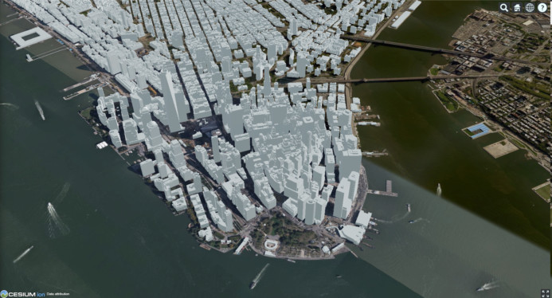

Publication Date: YYYY-MM-DD
Approval Date: YYYY-MM-DD
Submission Date: 2021-08-30
Reference number of this document: OGC 21-058
Reference URL for this document: http://www.opengis.net/doc/PER/ISG-Sprint-Yr2-ID
Category: OGC Public Engineering Report
Editor: Leonard Daly, Rollin Phillips
Title: ISG Year 2 Sprint:
COPYRIGHT
Copyright © 2021 Open Geospatial Consortium. To obtain additional rights of use, visit http://www.opengeospatial.org/
WARNING
This document is not an OGC Standard. This document is an OGC Public Engineering Report created as a deliverable in an OGC Interoperability Initiative and is not an official position of the OGC membership. It is distributed for review and comment. It is subject to change without notice and may not be referred to as an OGC Standard. Further, any OGC Public Engineering Report should not be referenced as required or mandatory technology in procurements. However, the discussions in this document could very well lead to the definition of an OGC Standard.
LICENSE AGREEMENT
Permission is hereby granted by the Open Geospatial Consortium, ("Licensor"), free of charge and subject to the terms set forth below, to any person obtaining a copy of this Intellectual Property and any associated documentation, to deal in the Intellectual Property without restriction (except as set forth below), including without limitation the rights to implement, use, copy, modify, merge, publish, distribute, and/or sublicense copies of the Intellectual Property, and to permit persons to whom the Intellectual Property is furnished to do so, provided that all copyright notices on the intellectual property are retained intact and that each person to whom the Intellectual Property is furnished agrees to the terms of this Agreement.
If you modify the Intellectual Property, all copies of the modified Intellectual Property must include, in addition to the above copyright notice, a notice that the Intellectual Property includes modifications that have not been approved or adopted by LICENSOR.
THIS LICENSE IS A COPYRIGHT LICENSE ONLY, AND DOES NOT CONVEY ANY RIGHTS UNDER ANY PATENTS THAT MAY BE IN FORCE ANYWHERE IN THE WORLD. THE INTELLECTUAL PROPERTY IS PROVIDED "AS IS", WITHOUT WARRANTY OF ANY KIND, EXPRESS OR IMPLIED, INCLUDING BUT NOT LIMITED TO THE WARRANTIES OF MERCHANTABILITY, FITNESS FOR A PARTICULAR PURPOSE, AND NONINFRINGEMENT OF THIRD PARTY RIGHTS. THE COPYRIGHT HOLDER OR HOLDERS INCLUDED IN THIS NOTICE DO NOT WARRANT THAT THE FUNCTIONS CONTAINED IN THE INTELLECTUAL PROPERTY WILL MEET YOUR REQUIREMENTS OR THAT THE OPERATION OF THE INTELLECTUAL PROPERTY WILL BE UNINTERRUPTED OR ERROR FREE. ANY USE OF THE INTELLECTUAL PROPERTY SHALL BE MADE ENTIRELY AT THE USER’S OWN RISK. IN NO EVENT SHALL THE COPYRIGHT HOLDER OR ANY CONTRIBUTOR OF INTELLECTUAL PROPERTY RIGHTS TO THE INTELLECTUAL PROPERTY BE LIABLE FOR ANY CLAIM, OR ANY DIRECT, SPECIAL, INDIRECT OR CONSEQUENTIAL DAMAGES, OR ANY DAMAGES WHATSOEVER RESULTING FROM ANY ALLEGED INFRINGEMENT OR ANY LOSS OF USE, DATA OR PROFITS, WHETHER IN AN ACTION OF CONTRACT, NEGLIGENCE OR UNDER ANY OTHER LEGAL THEORY, ARISING OUT OF OR IN CONNECTION WITH THE IMPLEMENTATION, USE, COMMERCIALIZATION OR PERFORMANCE OF THIS INTELLECTUAL PROPERTY.
This license is effective until terminated. You may terminate it at any time by destroying the Intellectual Property together with all copies in any form. The license will also terminate if you fail to comply with any term or condition of this Agreement. Except as provided in the following sentence, no such termination of this license shall require the termination of any third party end-user sublicense to the Intellectual Property which is in force as of the date of notice of such termination. In addition, should the Intellectual Property, or the operation of the Intellectual Property, infringe, or in LICENSOR’s sole opinion be likely to infringe, any patent, copyright, trademark or other right of a third party, you agree that LICENSOR, in its sole discretion, may terminate this license without any compensation or liability to you, your licensees or any other party. You agree upon termination of any kind to destroy or cause to be destroyed the Intellectual Property together with all copies in any form, whether held by you or by any third party.
Except as contained in this notice, the name of LICENSOR or of any other holder of a copyright in all or part of the Intellectual Property shall not be used in advertising or otherwise to promote the sale, use or other dealings in this Intellectual Property without prior written authorization of LICENSOR or such copyright holder. LICENSOR is and shall at all times be the sole entity that may authorize you or any third party to use certification marks, trademarks or other special designations to indicate compliance with any LICENSOR standards or specifications.
This Agreement is governed by the laws of the Commonwealth of Massachusetts. The application to this Agreement of the United Nations Convention on Contracts for the International Sale of Goods is hereby expressly excluded. In the event any provision of this Agreement shall be deemed unenforceable, void or invalid, such provision shall be modified so as to make it valid and enforceable, and as so modified the entire Agreement shall remain in full force and effect. No decision, action or inaction by LICENSOR shall be construed to be a waiver of any rights or remedies available to it.
None of the Intellectual Property or underlying information or technology may be downloaded or otherwise exported or reexported in violation of U.S. export laws and regulations. In addition, you are responsible for complying with any local laws in your jurisdiction which may impact your right to import, export or use the Intellectual Property, and you represent that you have complied with any regulations or registration procedures required by applicable law to make this license enforceable.
- 1. Subject
- 2. Executive Summary
- 3. References
- 4. Terms and definitions
- 5. Overview
- 6. Material and Purpose
- 7. Findings
- 8. Conclusions
- 9. Component Implementation: Cesium
- 10. Component Implementation: Ecere
- 11. Component Implementation: FlightSafety
- 12. Component Implementation: InfoDao
- 13. Component Implementation: SimBlocks.io
- 13.1. Subject
- 13.2. Summary
- 13.3. Previous Work
- 13.4. Architecture
- 13.5. Proposed Activities
- 13.6. Accomplishments
- 13.7. Methodology
- 13.8. Converting CDB into GeoPackage with Models Converted to Binary glTF
- 13.9. Performance Metrics
- 13.10. Created / Converted Content in Unreal Engine 4.26.1
- 13.11. Technical Challenges
- 13.12. Future Work
- 14. Component Implementation: Steinbeis
- 15. Recommendations for the Future
- Appendix A: OGC Standards/Specifications and Scenarios
- Appendix B: Feature Comparison: glTF and OpenFlight
- Appendix C: Datasets Used in ISG Year 2 Sprint
- Appendix D: Display Applications
- Appendix E: Revision History
- Appendix F: Bibliography
1. Subject
The OGC Interoperable Simulation and Gaming Year 2 Sprint advanced the use of relevant OGC and Khronos Group standards in the modeling, simulation, and training communituies through capability develoipment, compatibility testing, and gap anaylsis. Of particular interest was the use of glTF models, game engines, and 3rd-party mobile device libraries for the display and interaction with OGC data and APIs.
2. Executive Summary
The Interactive Simulation and Gaming (ISG) Year 2 Sprint ("Sprint") was undertaken by OGC to investigate and anayize the capability of using other standards (glTF in particular); widely adopted 3rd party display engines (Unity and Unreal Engine in particular); OGC current and upcoming Standards (in particular GeoVolumes, GeoPose, SensorThings, and MovingFeatures); future alignment of new technologies and CDB.
The Interactive Simulation and Gaming (ISG) Year 2 Sprint ("Sprint") was undertaken by OGC to investigate and anayize the capability of using other non-OGC standards, widely adopted 3rd party display engines, OGC current and upcoming Standards, and future alignment of new technologies and CDB.
The primary non-OGC standard under consideration was glTF. This was also successfully investigated in ISG Year 1 Sprint. 3rd-party display engines included not only Unity and Unreal Engine, but the ARCore and ARKit mobile device augmented reality libraries.
The OGC existing and upcoming standards of interest include CDB, GeoVolumes, GeoPose, SensorThings, and MovingFeatures. CDB is of special interest in that an optional goal is alignment of new technolgy with a future release of CDB, especially using glTF as an additional modeling format.
OGC has partnered with The Khronos Group on two Sprints (Year 1 and Year 2). Both organizations worked dilegently to advance glTF to meet the needs of current and future users while ensuring support to previous activities. Bot organizations are investing in the development of new and future technologies.
2.1. Operation
The Sprint implementation lasted two months from kickoff to submission of participant reports. THe actually coding effort was scheduled for two weeks in June 2021 on either side of the OGC Member Meeting. The entire effort was always planned as virtual.
Two datasets were made available to all participants - San Diego and New York CDB datasets. The participants accessed eight others (10 dataset total). This was unexpected and the list was documented in Appendix C: Datasets Used in ISG Year 2 Sprint. The participants for the Sprint were (in alphabetical order): Cesium, Ecere, FlightSafety, InfoDao, SimBlocks.io, and Steinbeis. All participants were OGC members and had prior experience participating in OGC projects.
2.2. Accomplishments
Most of the participants partnered with at least one other participant for some portion of their work. The participants addressed a wide-range of issues described in the Call For Proposals. This is shown in Table 4. The wide range of problems address plus agreement on cross-over problems provided confidence that the problem space was covered and individual results are generally applicable.
-
Data conversion operation is mostly understood. Future efforts should be focused on operational improvements for specific scenarios.
-
glTF is sufficiently capable to support static GeoTypical and GeoSpecific models in CDB
-
Games engines (Unreal Engine and Unity) were demonstrated to work with OGC data
-
OGC Data and APIs can be integrated into mobile apps using ARCore and ARKit.
-
Seamless and smooth transitions can be done going outdoors to indoors and back out.
2.3. Issues
A few issues were discovered during the Sprint. One one might have impact on OGC Standards or common implementation using OGC APIs. The other issues mostly related to interacting with external applications. All of the issues are documented in Discovered Inconsistencies of the Findings chapter. The most important ones are listed here.
-
Error is specification description or interpertation of empty tiles in 3D Tiles.
-
OGC Member Meeting interfered with smooth and continous development during the Sprint.
-
3D applications may use different coordinate systems
-
Some 3rd-party software related to game engines is not reliable or performant as needed
-
Moving features is a hard problem
2.4. Recommendations
This Sprint generated seven general recommendations. Each recommendation derived from one or more of the issues generated by the participants. The recommendations are listed here with the details linked from each recommendation.
-
Recommendation #5: Include glTF as an optional prototype modeling format in an upcoming release of CDB.
-
Recommendation #6: Use a Sprint to investigate integration of SensorThings and GeoPose to remotely track moving objects or people of interest displaying the results in a virtual or augmented reality environment.
-
Recommendation #7: Use a Sprint to display a building environment with indoor and outdoor components. The display environment needs to include extensive use of metadata and IoT (SensorThings API) to highlight features not readable visible.
-
Recommendation #3: OGC should develop a catalog of datasets for future projects and members.
-
Recommendation #4: Increase communication between OGC and Khronos Group to speed up geospatial requirements for glTF and adoption of glTF in the geospatial community.
-
Recommendation #2: Do not have the Sprint work week(s) immediately before a member meeting.
-
Recommendation #1: Allow at least 3 months from the conclusion of the Sprint work to write, edit, and review the final (Engineering) report.
2.5. Document contributor contact points
All questions regarding this document should be directed to the editor or the contributors:
Contacts
| Name | Organization | Role |
|---|---|---|
Leonard Daly |
Daly Realism representing Khronos Group |
Editor & Contributor |
Rollin Philips |
Open Geospatial Consortium |
Editor & Contributor |
Sean Lilley |
Cesium |
Contributor |
Sam Suhag |
Cesium |
Contributor |
Michala Hill |
Cognitics/SOCOM |
Sponsor support |
Jerome St-Louis |
Ecere |
Contributor |
Diego Caraffini |
Ecere |
Contributor |
Patrick Dion |
Ecere |
Contributor |
Spencer Berg |
FlightSafety |
Contributor |
Ryan Franz |
FlightSafety |
Contributor |
Aaron Williams |
FlightSafety |
Contributor |
Joshua Rentrope |
InfoDao |
Contributor |
Jordan Dauble |
SimBlocks.io |
Contributor |
Glenn Johnson |
SimBlocks.io |
Contributor |
Volker Coors |
Steinbeis, HFT Stuttgart |
Contributor |
Thunyathep Santhanavanich (Joe) |
Steinbeis, HFT Stuttgart |
Contributor |
Athanasios Koukofikis |
Steinbeis, HFT Stuttgart |
Contributor |
Rushikesh Padsala |
Steinbeis, HFT Stuttgart |
Contributor |
Patrick Würstle |
Steinbeis, HFT Stuttgart |
Contributor |
2.6. Foreword
Attention is drawn to the possibility that some of the elements of this document may be the subject of patent rights. The Open Geospatial Consortium shall not be held responsible for identifying any or all such patent rights.
Recipients of this document are requested to submit, with their comments, notification of any relevant patent claims or other intellectual property rights of which they may be aware that might be infringed by any implementation of the standard set forth in this document, and to provide supporting documentation.
3. References
|
Note
|
Draft
This section is not complete. The bulleted lists will be turned into prose with references to the detailed descriptions. Additional items may be added based on additional reviews of the participant material. |
The following normative documents are referenced in this document.
4. Terms and definitions
|
Note
|
Draft
This section is not complete. The bulleted lists will be turned into prose with references to the detailed descriptions. Additional items may be added based on additional reviews of the participant material. |
For the purposes of this report, the definitions specified in Clause 4 of the OWS Common Implementation Standard OGC 06-121r9 shall apply. In addition, the following terms and definitions apply.
|
Note
|
Structure
Many of these are acronyms and not really terms. Should the acronums be included here or not? |
- ● 3dsMax
-
tbd
- ● 3D Tiles
-
tbd
- ● 3D Tiles Next
-
tbd Links to https://github.com/CesiumGS/3d-tiles/blob/3d-tiles-next/3D_TILES_NEXT.md
- ● ArcGIS
-
tbd
- ● CDB
-
tbd
- ● CDB X
-
tbd
- ● OpenFlight
-
tbd
- ● COLLADA
-
A 3D model format that supports private extensions.
- ● CityGML
-
tbd
- ● EOS
-
tbd
- ● Feature Manipulation Engine
-
tbd
- ● GeoPackage
-
tbd
- ● GeoSpecific
-
A 3D model of an object that has a specific place on Earth. Examples include Eifel Tower, US Capitol, Mt. Rushmore, and many other objects that are unique and may be used to immediately identify a location and potentially time.
- ● GeoTypical
-
A 3D model of an object whose existance does not identify a location and where the model may be used repeatedly. Examples include trees, most warehouses, and many residential buildings. tbd
- ● glb
-
See glTF.
- ● glTF
-
The 3D model standard from the Khronos Group. It stands for "graphics language Transmission Format". The V2.0 standard is documented. The standard is in the process of becoming an ISO Standard. A glTF model may be represented in multiple files with the primary file having the extension .gltf; or typically a single file with the extension .glb.
- ● GNOSIS
-
Ecere’s geospatial client
- ● GTModel
-
See GeoTypical
- ● One World SDK
-
SimBlocks.io software development kit for handling geospatial data in Unity.
- ● OpenFlight
-
A data modeling language.
- ● OSG Software
-
tbd
- ● SensorThings API
-
tbd
- ● skp
-
tbd
- ● TinyGLTF
-
An open source software library that handles glTF files.
- ● Trimble Sketchup
-
tbd
|
Note
|
Question
RP: How crazy do I go with Terms, like XML, PNG and the likes of obvious internet jargon isn’t needed right? |
- ● term name
-
text of the definition
- ● term name|synonym
-
text of the definition
4.1. Abbreviated terms
-
COTS Commercial Off The Shelf
-
DCE Distributed Computing Environment
-
IDL Interface Definition Language
-
B3DM tbd
-
COTS Commercial Off The Shelf
-
CNAM XML
-
DIIL Disconnected, Interrupted, Intermittent, Low-Bandwidth
-
DIS Distributed Interactive Simulation
-
DOF(s) Degrees of Freedom. Full freedom in space has six degrees of freedom - left/right, front/back, up/down, roll, pitch, and yaw.
-
E3D Ecere’s 3D model format
-
FLIR Forward looking InfraRed
_tbd_
-
HLA ::
_tbd_
-
I3DM ::
_tbd_
-
IoT Internet of Things
-
LOD Level Of Detail. A highly detailed model may be created to display at reduced detail when the scene camera is far away. The model typically defines the number of levels, the detail shown at each level, and the applicable viewing range.
-
MModels Moving Models
-
MOVINT Movement Intelligence
-
NVG Night vision goggles
- ● NGA GRiD
-
PBR Physically Based Rendering. This is a means for calculating the appearance of a model based on a number of physical parameters including metal-roughness, normals, and transmission. glTF uses this model for rendering.
-
SWIR Short-Wave InfraRed. The spectrum of electromagnetic energy with wavelength longer than visible red, but shorter than thermal energy.
-
TIFF Tagged Image File Format. This format is used for storing raster graphics images. It is a container format that can store multiple diffrent image formats. Images stored as TIFF files frequently are uncompressed or lossless-ly compressed. See also Wikipedia - TIFF.
-
X3D Extensive 3D Graphics - an ISO standard for storing, transmitting, and displaying 3D models. See https://www.web3d.org/ for more details.
-
XR Extended Reality. This term encompases the entire specturm from fully Virtual Reality (everthing computer rendered), through Augmented Reality (some objects comptuer rendered , and composed with camera data), to Real Reality (complete physical space and objects).
5. Overview
Section 6 describes the Material and Purpose of the Sprint. All of the material that was provided to the participants is either included here or referenced.
Section 7 presents the overall Findings from the Sprint. The discussion includes material learned from all participants and the Sprint leadership team in carrying out the Sprint.
Section 8 presents the major Conclusions from the Sprint. This represents the collective knowledge and experience of the participants and editor.
Sections 9-14 contain the Participant Detailed Reports.
Section 15 contains the consolidated Future Recommendations. Much of this content was gathered from participant detailed reports.
Appendix A contains a copy of the OGC Standards/Specifications and Scenarios table from https://portal.ogc.org/files/?artifact_id=96942#StandardSpecScenarioCrossReference.
Appendix B contains a copy of the Feature comparison table (or equivalent) with additional notes and comments.
Appendix C contains a list of the datasets that were used by the various participants. Included with the list is additional data describing the reference location, creator, license, and other useful items.
Appendix D contains a list of the display applications that were used by the participants for their results. The table highlights the use of game engines, mobile devices, and 3rd party display applications.
Appendix E contains the document Revision History.
Appendix F contains the document Bibliography.
6. Material and Purpose
6.1. Call for Pariticipation
The OGC ISG Year 2 Sprint: Call for Participation (CfP) was released on 1 April 2021 by the Open Geospatial Consortium for the purpose of obtaining proposals from organizations interested in studying data and model handling within the CDB environment. The CfP provided all of the material necessary for organizations to make a proposal for participantion either by direct inclusion in the doucment or publicly available links.
The CfP specificed the schedule from kickoff meeting (2 June 2021) through the two spring weeks (weeks of 7 June and 21 June), and the participant final report inputs (31 July). The Sprint was designed from the beginning to be virtual due to pandemic safety restrictions and precautions. The decision was made prior to the release of the CfP.
The schedule for the Sprint work was defined in the CfP and is listed below. Of note is the two non-contiguous weeks of Sprint Work (Mini-Sprint #1 and Mini-Sprint #2) separated by the OGC Member meeting. The Findings section addresses participant comments on the scheduling. It was decided in June to seek CDB SWG review and comments prior to pending publication because of the close and important work this Sprint was performing relative to current work within CDB SWG. That addition did not change any contractual arrangements.
| Milestone | Date | Event |
|---|---|---|
March 31, 2021 |
Release of Call for Participation (CFP) |
|
April 30, 2021 |
CFP Proposal Submission Deadline (11:59pm EDT) |
|
May 31 |
All Participation Agreements signed (OGC will start sending preliminary offers in early May). |
|
June 2 |
Half-day Kickoff Workshop to be organized as a virtual meeting. |
|
Week of June 7 |
Mini-Sprint #1 (two scheduled teleconferences plus ad hoc calls as needed). |
|
Week of June 14 |
Quarterly OGC Member Meeting: submit formal review request to selected OGC WG to review the ER later in the timeline (probably at the Sep. Member Meeting). |
|
Week of June 21. |
Mini-Sprint #2. |
|
June 29 & July 6 |
Dry-Run (29 June) and Stakeholder Demo Event (6 July). |
|
July 31 |
All participant Engineering Report (ER) contributions submitted. |
|
August 19 & August 30 |
Near-Final ER draft posted to CDB SWG (19 August) and Pending (30 August) for ISG DWG review. |
|
September 20 |
Quarterly OGC Member Meeting: ER Publication Vote; Presentation(s) of Final Results. |
6.2. Discussion of Scenarios
6.2.1. Overview
The CfP described four possible scenarios. Scenario 1 was split into an A and B part. Participants could choose to work on any combination (to a maximum of three) of these or propose their own within the guidelines established by these scenarios and the rest of the CfP.
6.2.2. Scenario 1
This scenario related to the conversion of data formats from one to another. They differed in whether the new format was user-requested on-demand or a batch pre-demand process. In both cases the participants were requested to use OGC Standards and specifications or provide a good reason why that did not work. Note that in both scenarios, glTF is considered an OGC format.
Scenario 1A addressed the needs of on-demand conversion from one OGC data format to another. The results needed to be quantified in terms of response times from initial request to content delivery. The use of existing OGC Standards, API, and Specifications (OSAS) for this scenario was important to the process. It allowed for variations if a good reason could be provided and a recommendation was made for an alternate.
Scenario 1B addressed the needs of pre-demand batch conversion from formats found in a CDB dataset to other OGC formats. This sub-scenario was designed to quantify the server resources needed for a batch conversion. The conversion process was not required to use existing OSAS, but did need to propose a prototype of a new standard. This sub-scenario was also designed to provide guidance on recommended sizing limits of future versions of CDB.
6.2.3. Scenario 2
Scenario 2 was designed to address the issues involved from navigating from outside to inside. Traditionally these models serve different purposes and are not necessarily compatible. CDB defines buildings and their relationship to other objects in the scene. Other OGC Standards (e.g., Indoor Mapping Data Format and IndoorGML) define the interior structures. Moving from outside to inside without loosing context of the other side has not been a smooth process.
6.2.4. Scenario 3
The integration of animated transportation networks is critical in understanding how a region operates. This scenario requires the participant to show transportation networks with animated vehicles. There was no limitation placed on the the network type except that it be land- or air-based. This scenario also tested incompleteness in existing OGC specifications for tracking moving objects.
6.2.5. Scenario 4
CDB is considering using glTF as its modeling format. It is necessary to understand the advantages and disadvantages of glTF compared to the existing CDB model format - OpenFlight. Preliminary work included in the CfP (and included in Appendix A: Specification / Scenario cross reference table) showed that glTF and OpenFlight were similar in features. Participants working on this scenario were to analyze the formats in the context of CDB and specify additional capabilities needed by glTF to functionality replace OpenFlight.
6.3. Material provided to Participants
6.3.1. General OGC Information
Potential bidders were provided with a variety of information including San Diego CDB Dataset, Appendix A: Specification / Scenario cross reference table, and Appendix B: OpenFlight / glTF capability cross reference. Previously used datasets (e.g., <<,New York CDB Dataset>>) and new datasets (e.g., Austin Dataset) were identified and used by the participants. These are described more fully in Data Sets and Appendix C: Datasets Used in ISG Year 2 Sprint.
6.3.2. Data Sets
The primary data set for the Sprint is known as San Diego CDB (licensed under the SanGIS Legal Notice - SanGIS GIS Data End User Use Agreement and Disclaimer for Data Released to the Public). This data set was collected using a number of sensors and methods and encompassed nearly all of the downtown San Diego and vicinity, including the port, sports stadium, recreational facilities, commercial, and housing areas.


Participants were free to use other data sets to provide the sufficient and necessary data for development and testing. Several participants did choose to use other data sets. The full list of data sets used along with other reference and meta-data information is provided in Appendix C: Datasets Used in ISG Year 2 Sprint. The table below summarizes data set usages and the participants.
| Data set | Cesium | Ecere | FlightSafety | InfoDao | SimBblocks | Steinbeis |
|---|---|---|---|---|---|---|
Austin |
- |
- |
- |
- |
X |
- |
Berlin |
- |
X |
- |
- |
- |
- |
Honolulu |
- |
- |
X |
- |
- |
- |
Miami |
- |
- |
- |
X |
- |
- |
New York CDB |
- |
X |
- |
- |
- |
- |
Paris |
- |
- |
- |
- |
X |
- |
San Diego CDB |
- |
X |
- |
X |
X |
- |
Stuttgart |
- |
X |
- |
- |
- |
X |
Yeman |
X |
- |
- |
- |
- |
- |
7. Findings
7.1. Introduction
These findings all come from comments (written or verbal) from the participants. These represent items that were deemed important by the participants. The information here comes from achieved results, not unachieved stretch goals.
7.2. Aspects of Investigation
Each participant was free to choose which one (or more) scenarios to pursue. Four scenarios were discussed in the Call for Participation. Participants could also define their own scenario. Compensation was based on the number of chosen scenarios and the depth to which each chosen scenario was pursued. OGC reviewed each participant’s proposal and suggested revisions to better align with the goals of the Sprint, the interest of the Sponsor, and the coverage by the other participants. Table 3 provides a summary description of the selected scenarios. Table 4 shows the coverage of scenarios by the participants.
| Scenario | Summary Description |
|---|---|
1A |
Develop efficient on-demand conversion from on OGC 3D format to another. |
1B |
Develop efficient batch conversion from on OGC 3D format to another. |
2 |
Integrate indoor and outdoor displays with metadata. |
3 |
Integrate animated transportation networks with 3D tiled display. |
4 |
Perform actual-use gap analysis on OpenFlight and glTF core + modules. |
4C |
Develop specific glTF extensions to support needed capabilities in CDB. |
| Scenario | ||||||
|---|---|---|---|---|---|---|
Participant |
1A |
1B |
2 |
3 |
4 |
4C |
✓ |
||||||
✓ |
✓ |
✓ |
||||
✓ |
||||||
✓ |
✓ |
|||||
✓ |
✓ |
|||||
✓ |
✓ |
|||||
7.2.1. Cooperative Efforts
Unlike the ISG Sprint Year 1 or the GeoVolumes Pilot, this Sprint did not require or make major use of a Technology Integration Experiment (TIE). There was still substantial cooperation between some of the participants that need to be recognized. The following list is presented without order.
-
Cesium and FlightSafety cooperated on the understanding and development of glTF extensions and OpenFlight feature analysis.
-
Ecere and Steinbeis worked together on the indoor/outdoor display capabilities required by Scenario 2.
-
Cesium’s geospatial client, CesiumJS, was used by Ecere, FlightSafety, Steinbeis, and Cesium.
7.3. Results
7.3.1. General Results
These findings are not particular to a specific scenario and were reported by more than one participant.
-
Do not split a 2-week sprint by the member’s meeting
-
Best to entirely avoid member’s meeting week
-
glTF needs additional work to fully support geospatial work and CDB in particular
7.3.2. Discovered Inconsistecies
Various inconsistencies with various aspect or external items were discovered. These include OGC Standards, OGC data, modeling standards, and software. Some of the inconsistencies are documented, and others reflect documentation that needs improving.
-
Ecere
-
Error in CesiumJS interpertation of empty tiles (a clarification may be needed in 3D Tiles specification)
-
FlightSafety
-
OpenFlight coordinate reference system is different than glTF or 3dsMax. This is not really an inconsistency, but known difference between modeling formats.
-
-
SimBlocks.io
-
Some open source software is not as reliable or performant as needed
-
Tile content issues with San Diego CDB
-
Tile Model Geometry limits exceeded
-
Tile Model Reference counts exceeded
-
-
7.3.3. Game Engine Interface
The following participants incorporated game engine (Unreal or Unity) into the client display of geospatial data while working on their chosen scenarios.
-
InfoDao displayed results in Unity while investigating moving models. There needs to be additional testing to determine goodness-of-fit for this use in real-world applications.
-
SimBlocks.io used Unreal and Unity game engines as the client display when batch converting CDB and other geospatial data.
-
Steinbeis achieved an indoor / outdoor scenario that incorporated real-time interface to SensorThings API and drone-view that allowed a merged over-the-shoulder and altitude view of the 3D environment. They integrated display capabilities from Unreal Engine (e.g., trees) into their scene.
It was not part of their Sprint work, but it needs to be noted that Cesium has a plugin for Unreal that on-demand imports 3D geospatial data.
7.3.4. Conversion (Scenario 1)
The general problem of data conversion has been noted in Year 1 Sprint and recommended for further investigation. This Sprint had one scenario that focused on two aspects of conversion - full-batch mode, and on-demand. InfoDao investigated the timing of conversion and strategies for reducing user wait-time. Ecere looked into optimizing the conversion to 3D Tiles for the purpose of handling large levels of detail. SimBlocks.io investigated the conversion issues when importing CDB and other datasets into game engines.


7.3.5. Indoor / Outdoor (Scenario 2)
Scenario 2 was designed to improve the interaction between outdoor scenes (frequently CDB models for these Sprints) and indoor building models. Steinbeis worked with Ecere on this task. Steinbeis used the models from University of Applied Sciences Stuttgart (HFT Stuttgart). The buildings were modeled in Trimble SketchUp format and through a multi-step process converted to glTF. Steinbeis also integrated SensorThings API into this demo.


7.3.6. Moving models (Scenario 3)
This scenario proved more difficult than expected. InfoDao performed initial investigation but determined that additional testing was needed before producing conclusive resuls. Steinbeis built on their results from Year 1 Sprint and work in Scenario 2 to show transportation routes with tracking and multiple objects.

7.3.7. glTF as Modenling Standard (Scenario 4)
This scenario was important to establish real-world capability limits of glTF in a CDB environment. FlightSafety and Cesium worked on different aspects of the effort. Cesium took the approach of developing specific extensions that provided solutions to specific capabilities of OpenFlight and CDB. OpenFlight looked more broadly at the feature coverage of glTF in comparison with OpenFlight.
Cesium developed four extensions. Two for metadata, one for instancing, and one for data/tile management. The two metadata extensions allowed very fine-grain metadata. One extension supports it at the texel level (illustrated below); the other one supports vertex metadata.
FlightSafety performed a gap analysis of glTF compared to OpenFlight as used in CDB. The full result is presented in Table 5. From that analysis, they produced three recommendations (summarized here).
-
Create a new glTF extension to support mesh switching that can be used for Damaged States and simple geometry switching.
-
Additional testing of the proposed extensions is needed, to see if they cover the capabilities of CDB using OpenFlight.
-
Create some standardized moving models for teting purposes.
FlightSafety also tested one existing extension (KHR_materials_variants), worked with Cesium on testing their texel metadata extension - EXT_feature_metadata. As a final effort they investigated inserting a glTF model of the Space Shuttle into one of their products VITAL 1150 Image Generator. Rendering in different environments were successfully produced.


7.3.8. Other Accomplishments
This sections discusses accomplishments that were not directly tied to a scenario or part of the participants efforts. As part of their Scenario 2 work, Steinbeis also integrated SensorThings API with other 3D and displayed Unreal Engine.
As part of their investigation into optimizing dataset updates in a low-bandwidth environment, InfoDao showed how a glTF model could be inserted into an older dataset to relfect recent events. They chose the Surfside condo complex in Miami.
Finally Steinbeis integrated 3D Tiles data into Android and iOS phone clients. The iOS client needed to use USDZ model data (Apple requirement). These demonstrations showed how OGC APIs work in low-powered mobile devices in Augmented or Virtual Reality.

8. Conclusions
Introduction The ISG Year 2 Sprint started to layout the path from today’s environment with data stored in CBD V1.0 datasets and models stored in OpenFlight to the future. The path indicated by the participants efforts is data-similar and feature-richer then today’s capabilities. This path is most clearly indicated by enhanced capabilities using glTF models, batch-driven and interactive data conversions, and game engine driven displays.
Models stored as glTF glTF models have the potential to offer a visually richer display using current and widely-adopted transmission file format. glTF uses physically based rendering (PBR) for its material model. PBR can more accurate depect real-world materials in all wavelengths than the specular model used by OpenFlight. glTF has a large number of extensions that support much of what is needed in a CDB environment. It was shown by Cesium and OpenFlight that development of features not currently supported by glTF is not difficult. OpenFlight has recommended that CDB start to allow glTF models to be used in a near-future version of CDB.
Data conversions Time-consuming, non-trivial task. Necessary to support the wide range of missions that CDB supports. InfoDao proposed batch conversion for long-term and allow real-time/interactive updates as needed in a Disconnected, Interrupted, Intermittent, Low-Bandwidth (DIIL) environment.
Game engine and XR displays SimBlocks.io, Steinbeis, and InfoDao showed how game engines (e.g., Unity or Unreal Engine) can be used to drive the client displays. These engines can be used in desktop, virtual (e.g., headsets), or augmented environments making them one of the most useful client side display drivers. Steinbeis built Androis and iOS Augmented and Virtual Reality apps running on phones to display 3D data.
Conclude The path is laid out through data conversion, use of modern model transmission formats, and standard commercial display engines. Travel along the path needs to be well-planned so that the entire community can fully participate and evaluate the progress. Progress towards this goal needs to be at a pace sufficiently fast to get there without leaving anyone or any critical features behind. There is much development to do and specifications to write
9. Component Implementation: Cesium
9.1. Overview
In this Sprint, the Cesium team focused on exploring how extensions to glTF enable runtime-efficient storage and attribution of data stored in OpenFlight, the 3D model format used in CDB datasets. Similarly, the team also investigated extensions to 3D Tiles that facilitated the conversion from CDB to 3D Tiles.
In the previous OGC ISG Sprint, the Cesium team focused on investigating the optimal method of serving 3D content from a CDB dataset into a web viewer. The result of that effort was an open source CDB to 3D Tiles conversion pipeline. The results of this Sprint were derived from work done to extend the pipeline to support new extensions to glTF and 3D Tiles.
9.2. Conversion from CDB to 3D Tiles 1.0
The work in the previous Sprint covered the steps to convert a CDB dataset with 3D models to a 3D Tiles 1.0 tileset. Here’s a brief top-down summary:
-
Each available dataset is converted to a tileset, with references to each instance of the dataset across geocells.
-
The root tileset references all the dataset tilesets.
-
The CDB dataset’s level of detail hierarchy is used for creating the spatial index in the tileset.json
-
The Elevation and Imagery datasets are stitched together to create a terrain tileset.
-
Tilesets created from all datasets except GeoTypical models use the Batched 3D Model (.b3dm) format for their content.
-
The GeoTypical models use the Instanced 3D Model format (.i3dm) format for their content.
-
The metadata for each cultural feature is encoded in the Batch Table.
-
The geometry is converted to glTF.
9.3. Conversion from CDB to 3D Tiles Next
9.3.1. Introduction
This section discusses the conversion of data stored in CDB to a new Cesium-developed format 3D Tiles Next
9.3.2. Conversion to glTF
As mentioned above, in 3D Tiles 1.0, the B3DM and I3DM formats use glTF to store the geometry and an additional binary payload, called the Batch Table, to store metadata associated with each feature. Features are identified using Batch IDs, which are stored as vertex attributes in the glTF.
There are cases where per-vertex attribution is not sufficient, and per-texel attribution is required. Such is the case with the Raster Material datasets (RMTexture, RMDescriptor), where a raster band in a TIFF file is used to index into an XML file. Such a capability is not currently supported by 3D Tiles 1.0; therefore, an extension to glTF 2.0 was utilized.
9.3.3. Feature Metadata
The Cesium-developed feature metadata extension (EXT_feature_metadata) to glTF 2.0 enables per-vertex and per-texel attribution of metadata, metadata storage in binary or in textures, and specification of metadata schemas with support for enumerations. Through this extension, metadata can be embedded within the glTF payload, without need for an external payload such as the Batch Table.

Per-Texel Metadata - Source Data
The team utilized this extension to store the data in the Raster Material datasets when converting from CDB to 3D Tiles.

The Raster Material datasets are the RMTexture and RMDescriptor datasets, where the RMTexture contains a TIFF file with a raster band, with each texel in the band containing an index value. The value in each texel is an index into a corresponding XML file, in the RMDescriptor dataset, which contains the material information for the area covered by the texel. Each Composite Material may have a Primary Substrate and one or more Secondary Substrates. The weights of all Base Materials in a Substrate must add up to 100.
<Composite_Material_Table>
<Composite_Material index="1">
<Name>OCEAN</Name>
<Primary_Substrate>
<Material>
<Name>BM_WATER-OCEAN</Name>
<Weight>100</Weight>
</Material>
</Primary_Substrate>
</Composite_Material>
<Composite_Material index="2">
<Name>CITY</Name>
<Primary_Substrate>
<Material>
<Name>BM_CONCRETE</Name>
<Weight>40</Weight>
</Material>
<Material>
<Name>BM_FOLIAGE-DECIDUOUS</Name>
<Weight>20</Weight>
</Material>
<Material>
<Name>BM_ASPHALT</Name>
<Weight>20</Weight>
</Material>
<Material>
<Name>BM_WOOD-DECIDUOUS</Name>
<Weight>10</Weight>
</Material>
<Material>
<Name>BM_SHINGLE</Name>
<Weight>10</Weight>
</Material>
</Primary_Substrate>
</Composite_Material>
</Composite_Material_Table>The Materials referenced in the Substrate(s) of a Composite Material are stored in the Base Material Table.
<Base_Material_Table>
<Base_Material>
<Name>BM_DRYWALL</Name>
<Description>Drywall panel (aka plasterboard)</Description>
</Base_Material>
<Base_Material>
<Name>BM_MACADAM</Name>
<Description>Macadam (roadway constructed by compacting into a solid mass of broken stone using cement or asphalt as binder)</Description>
</Base_Material>
<Base_Material>
<Name>BM_METAL-IRON</Name>
<Description>Raw iron</Description>
</Base_Material>
</Base_Material_Table>Per-Texel Metadata - Extension
To bring these values into the EXT_feature_metadata extension, a class with properties needs to be defined to represent this metadata. In the example below, the compositeMaterials class represents a Composite_Material element from the Composite Material Table shown above.
{
"classes": {
"compositeMaterials": {
"properties": {
"name": {
"type": "STRING"
},
"material": {
"type": "ARRAY",
"componentType": "ENUM",
"enumType": "baseMaterials"
},
"weight": {
"type": "ARRAY",
"componentType": "UINT8"
}
}
}
}
}To efficiently represent the base materials, they were encoded as an enum (using a UINT8) instead of strings. In metadata storage, enums are referenced by their value, which can be assigned any value of the selected valueType.
{
"enums": {
"baseMaterials": {
"valueType": "UINT8",
"values": [
{
"name": "BM_DRYWALL",
"description": "Drywall panel (aka plasterboard)",
"value": 0
},
{
"name": "BM_MACADAM",
"description": "Macadam (roadway constructed by compacting into a solid mass of broken stone using cement or asphalt as binder)",
"value": 1
},
{
"name": "BM_METAL-IRON",
"description": "Raw iron",
"value": 2
}
]
}
}
}The TIFF was converted to a PNG, with the values from the raster band stored in the red color channel of the PNG, and the same texture coordinates as those of the imagery were utilized in the extension at the mesh primitive level, since they cover the same area and use the same projection:
{
"primitives": [
{
"attributes": {
"POSITION": 0,
"TEXCOORD_0": 1
},
"indices": 2,
"material": 0,
"extensions": {
"EXT_feature_metadata": {
"featureIdTextures": [
{
"featureTable": "compositeMaterialsTable",
"featureIds": {
"texture": {
"texCoord": 0,
"index": 0
},
"channels": "r"
}
}
]
}
}
}
]
}Finally, the actual values for each composite material was stored in the composite materials feature table, encoded in binary according to the Cesium 3D Metadata Specification, stored in glTF buffers and references using glTF bufferViews.


Per-Vertex Metadata
3D Tiles 1.0 supports metadata attribution through vertex attributes in glTF. EXT_feature_metadata takes a similar approach by adding a _FEATURE_ID vertex attribute that is used as an index into the Feature Table specified at the mesh primitive. The EXT_feature_metadata extension allows each metadata property to specify an identifier, a name, a data type and a description. As shown in the screenshot below, making these properties available to the user through a user interface helps add more context to the information being presented. It also aids in analysis and helping a user apply the right styling for the tileset.

9.3.4. GPU Instancing of Meshes
In 3D Tiles 1.0, the Instanced 3D Model (.i3dm) format is used to represent instanced meshes. This is the format of choice when converting 3D models from the GeoTypical model dataset. The I3DM format pairs an external payload, called the Feature Table, to the glTF to provide the transforms for each instance of the model. A Batch Table may also be added to include metadata per instance.
In 3D Tiles Next, the EXT_mesh_gpu_instancing extension is used to represent instanced meshes. The metadata per instance is stored in the EXT_feature_metadata object, which is applied as an extension to the EXT_mesh_gpu_instancing object.

9.3.5. Conversion to 3D Tiles Next
Using glTF as 3D Tiles
The 3DTILES_content_gltf extension to 3D Tiles enables using glTF files directly as content for tiles. This allows greater compatibility with existing tools that create or process glTF models. Runtime engines that currently support glTF can more easily support 3D Tiles.
Implicit Uniform Tiling
In 3D Tiles 1.0, the tileset.json is used to create a spatial index to obtain a hierarchical level of detail, which helps with runtime performance. This flexibility in the spatial data structure is useful as tilesets may require different spatial hierarchies, based on the type of content and its density. However sometimes a uniform tiling scheme is desired. This is the case for the CDB geocells that subdivide evenly into 4 smaller tiles i.e. in a quadtree structure. The 3DTILES_implicit_tiling extension enables a compact and efficient representation of such hierarchies, where information about each tile’s availability is stored in a bitstream. Additionally, this extension enables random access of a tile in the tileset.
{
"asset": {
"version": "1.0"
},
"extensionsRequired": [
"3DTILES_implicit_tiling"
],
"extensionsUsed": [
"3DTILES_implicit_tiling"
],
"root": {
"children": [
{
"children": [
{
"content": {
"uri": "N12E044_D001_S001_T001_L{level}_U{y}_R{x}.glb"
},
"extensions": {
"3DTILES_implicit_tiling": {
"maximumLevel": 1,
"subdivisionScheme": "QUADTREE",
"subtreeLevels": 7,
"subtrees": {
"uri": "subtrees/{level}_{x}_{y}.subtree"
}
}
}
}
],
"content": {
"uri": "N12E044_D001_S001_T001_LC1_U0_R0.glb"
}
}
],
"content": {
"uri": "N12E044_D001_S001_T001_LC2_U0_R0.glb"
}
}
}Since each negative level of a CDB geocell has only one descendent and covers the same area as its parent, explicit tiling is used. For the positive levels, the 3DTILES_implicit_tiling extension can be applied. Tiles can be randomly accessed using their level and x-y coordinates in the content URI template. The folder structure looks as follows:

9.3.6. Conclusion
The Cesium team’s efforts resulted in a validation of glTF and 3D Tiles extensions that add new capabilities to 3D Tiles such as implicit tiling and per-texel metadata. These capabilities enable better representation of CDB datasets as 3D Tiles as they retain more semantic metadata and allow for random access for tiles. This yields a much richer simulation environment at runtime and facilitates the dissemination of CDB datasets with optimal runtime performance.
10. Component Implementation: Ecere
10.1. Overview
For the second year OGC Interoperable Simulation and Gaming Sprint, Ecere focused efforts on improving visualization and streaming of 3D geospatial content. Those efforts spanned multiple tasks, improving capabilities in its GNOSIS geospatial software for:
-
visualizing and distributing the GeoPackage data store prototype of the next version of the OGC CDB standard,
-
generating and visualizing 3D Tiles tilesets,
-
distributing and accessing 3D data using 3D extensions of the OGC API - Tiles and 2D Tile Matrix Set and Tileset Metadata standards and
-
importing and exporting 3D models between glTF, COLLADA and Ecere’s E3D open 3D model format.
10.2. CDB X Prototyped GeoPackage Store
In the 2020 3D Tech Sprint to lay the foundations for the next version of the OGC CDB standard, provisionally named CDB X, Ecere was part of the team prototyping a data store for it based on the OGC GeoPackage standard and extensions.
In this year’s ISG Sprint, Ecere aimed to visualize the San Diego dataset produced according to this prototyped CDB X data store as well as provide distributions sourced directly from it.
Good progress was made towards achieving this goal.
As a result of the visualization attempts, some minor mistakes were identified in the prototyped CDB X dataset, including
a mismatched reference to a GeoPackage table where the tiles_ prefix should not have been included, as well as wrong scaling and offset
values in tables for the Gridded Coverage extension used for representing elevation data.
Once corrected, Ecere plans to update those GeoPackage CDB X data store prototypes which are hosted on the OGC portal within a
directory of the CDB SWG.


10.2.1. Configuration of data layers and zoom levels grouping
A key aspect of the proposed CDB X GeoPackage store is a configurable and deterministic system to partition very large datasets. This allows a global data at high resolution to be particioned into multiple GeoPackages, allowing the system to balance the number of files with the size of each file. In one configuration, a single GeoPackage may contain the entire CDB content for a small area, making it easy to pre-load on mobile devices, e.g. for a specific mission. In another configuration, an individual GeoPackage may contain only a particular data layer, such as e.g. terrain elevation, satellite imagery or 3D models.
A decision can also be made whether data should be split into multiple GeoPackages based on geographic location or not. When such a split is desired, each GeoPackage can still regroup multiple data tiles within the same extent. One purpose of tiles is to ensure a deterministic amount of data being loaded at any given time for any camera location. For this reason, tiles have an associated "zoom level" (a "tile matrix" in the 2D Tile Matrix Set standard), and tiles of lower zoom levels would contain data at lower resolution but cover a larger geographic extent. The grouping of multiple tiles inside a single GeoPackage is therefore decided by configuring how many zoom levels of tiles will be contained within a single GeoPackage tile pyramid. The GeoPackages file and directory names will be identified by the lowest resolution tile contained within, and will contain all tiles within the extent of that tile for the next (more detailed) zoom levels up to that configured maximum number of grouped zoom level. The grouping of zoom level starts from the maximum level so as to minimize the file count, so that if the total number of zoom levels is not divisible by the zoom level grouping, the GeoPackages starting grouping tiles at level 0 will contain fewer zoom levels. Details can be found in the Tiling section of the CDB X Tech Sprint Discussion Paper (OGC document number 20-092).
During the Sprint, Ecere implemented the capability to present a CDB X GeoPackage data store as a single data source with nested data layers, each representing
components such as terrain elevation, satellite imagery or 3D models, supporting any of the possible configurations of how data layers and tiles are grouped.
The configuration is read from the proposed cdb.json file describing how the data is packaged. These data sources can then be visualized in GNOSIS Cartographer,
or distributed from GNOSIS Map Server as either 3D Tiles tilesets (with support for the GeoVolumes API) or through OGC API - Tiles, including 3D extensions
for retrieving 3D models. Ecere developed a new dedicated data store driver for CDB X to be able to access data as needed from different GeoPackages based on
different configurations and manage the use of multiple databases at once. The GNOSIS GeoPackage driver was also refactored to facilitate code re-use with
this new CDB X data store.
10.2.2. GeoPackage 3D Models extension
A second important aspect of the proposed CDB X GeoPackage store is an extension for storing 3D models inside GeoPackages. Those 3D models may be stored in a shared 3D models table and instanced at multiple geographic locations, which is particularly useful for geotypical models such as trees making up a forest. They may also be batched 3D models, best suited for geospecific models, where all 3D models within a tile are stored inside a single tile blob of a GeoPackage tiles table record. In either case, the format of the model may be OpenFlight or glTF, or an alternate format such as E3D in the case of some of the Ecere experiments. In the instancing approach, either regular vector point features (encoded as Well Known Binary) or GeoPackage vector tiles would contain the geographic coordinates allowing geo-referencing of the 3D model, and optionally additional attributes orienting and/or scaling the model, as in the OGC CDB 1.x standard. In the batched 3D models approach, the origin of the 3D model is the center of the tile at the ellipsoid height. The 3D model is oriented relative to the tangent of the Earth surface at the geo-referencing position so that:
-
the axis of the 3D model extending towards the right of the model points Eastwards,
-
the axis of the 3D model extending towards the top of the model points upwards away from the center of the Earth, and
-
the axis of the 3D model extending towards the back of the model points Northwards.
In the case of instanced models, any specified rotation is relative to this orientation.
A positive rotation specified outside of the model itself is counter-clockwise when looking in the positive direction of the axis around which the rotation is performed. For roll, this follows the left-handed coordinate system rules as they align with the cardinal direction signs, i.e. a positive roll rotating around the South-North axis banks counter-clockwise to the left.
During the Sprint, Ecere migrated the draft specifications for this 3D models extension (developed during the CDB X tech sprint) to a fork of the official GeoPackage repository. Work is ongoing to improve these specifications to take the form of formal requirements and use OGC templates for specifications. Ecere also began implementing support for directly accessing those 3D models in the GNOSIS GeoPackage and CDB X drivers, so that they can be visualized in GNOSIS Cartographer and published from GNOSIS Map Server.
10.3. 3D Tiles distribution
10.3.1. Generating tilesets
Ecere improved the generation of 3D Tiles tilesets in its GNOSIS Map Server.
A sample of the newly generated 3D Tiles tileset is available for the San Diego buildings
here.
One major improvement was generating 3D Tiles for data at lower resolution levels and associating a correct geometric error to each level.
This enabled visualization clients such as the CesiumJS library to perform better while loading data for a larger geographic area.
Models further away can be presented at lower resolution, while those closer to the camera can be displayed at full resolution.
Lower resolution tiles may also contain fewer models than higher resolution ones.
The 3D Tiles tilesets generated by the GNOSIS Map Server leverage the OGC API - Tiles end-points and the GNOSIS Global Grid tile matrix set.
Therefore the geometry inside each batched 3D models (.b3dm) 3D Tile is oriented relative to the tangent of the Earth surface at the center of the tile so that:
-
the axis of the 3D model extending towards the right of the model points Eastwards,
-
the axis of the 3D model extending towards the top of the model points upwards away from the center of the Earth, and
-
the axis of the 3D model extending towards the back of the model points Northwards.
The JSON tileset description then provides transformation matrices re-orienting the models in the Earth Centered Earth Fixed (ECEF) 3D Cartesian system expected by 3D Tiles. Ecere suggests that such a setup could be one kind of implicit tiling schemes supported by 3D Tiles Next, based on the 2D Tile Matrix Set and Tileset Metadata standard, where a client would not require a JSON tileset description at all, and tiles could be directly accessed in a deterministic manner, as in CDB.
It was particularly difficult to correctly populate these transformations, especially as each level is relative to the parent tile’s transform. Each level may or may not provide a content payload and additional rules determine the mapping of glTF model axes to 3D Tiles.
A major challenge encountered had to do with the presence of one of parent tiles in a hierarchy not having an associated content payload.
In this case, setting the refinement method to REPLACE prevented refinement of the tileset for CesiumJS,
with the result that more detailed levels would never be requested.
CesiumJS appears to not consider that all children were refined since one of them had no content specified at
a particular level and its geometric error was not suitable for refinement yet, and as a result none of its siblings tile (already suitable
for refinement based on their geometric error) would be refined either. Various attempts at tweaking the refinement mode at different levels of the hierarchy
and figuring out the proper interpretation of the specifications were made but to no avail.
A previously reported CesiumJS issue was discovered that seems to describe this exact problem. It is not clear
if this is a bug in the code or the 3D Tiles specifications not properly explaining this behavior.
To work around this issue, Ecere added a .b3dm file with empty content for those parent tiles with no associated content and this solved the issue:
"content" : { "uri" : "/ogcapi/empty.b3dm" },Since the client behaves as expected with this awkward work-around, Ecere’s opinion is that the behavior of the CesiumJS implementation should be fixed to reflect the likely interpretation of the 3D Tiles specifications.
While the generated tilesets, like the source CDB data, re-used shared textures with the same external URLs for different models, it was noted that the CesiumJS implementation does not yet seem optimized to take this into account. This may result in a very significant unnecessary overhead in texture memory usage which was also highlighted by other participants as a major challenge in distributing and accessing content 3D Tiles generated from CDB.


10.3.2. Client visualizing 3D Tiles
Ecere improved its 3D Tiles client to better handle tilesets generated using different approaches, such as where transforms are specified. This was necessary to properly visualize the new tilesets generated by the GNOSIS Map Server which now contains transforms at different levels of the hierarchy. The variability in how transforms are specified, such as differences between tilesets generated prior to 3D Tiles version 1.0, the RTC extension, and the optional presence of transforms at different levels of the hierarchy or at the root of the tileset, the fact that transforms are relative to parent transforms as well as an implied change of orientation between glTF and 3D Tiles makes properly handling transformations quite difficult.
Multiple datasets were used for validating these improvements, including the new San Diego tilesets generated by the GNOSIS Map Server, the New York OpenStreetMap 3D buildings from the 3D Containers & Tiles pilot and the OGC Testbed 13 Berlin dataset from Virtual City Systems. More testing with additional datasets is planned to ensure the logic is now correct.
Ecere also attempted to visualize the data provided by the Steinbeis GeoVolumes server; however, the GNOSIS client was not able to handle the coordinates which seemed to be specified in a projection with no clear indication of how the geo-referencing should be done.
10.4. OGC API - Tiles distribution
In previous initiatives, including the OGC Testbed 14 CityGML and Augmented Reality, 3D Containers and Tiles pilot, and last year’s ISG Sprint, Ecere prototyped and demonstrated a simple approach to deliver 3D content by leveraging and extending the OGC API - Tiles specifications. In this year’s sprint, Ecere further improved support for this approach in both its GNOSIS Map Server and its GNOSIS Cartographer visualization client. Additionally, Ecere developed a new informative annex for the 2D Tile Matrix Set & TileSet Metadata standard extending its capabilities to support content of higher dimensions, such as 3D content. This annex will form a basis for standardizing temporal and 3D extensions for OGC API - Tiles. Furthermore, as a result of an increased appreciation of the simplicity and interoperability of this approach, the charter for the GeoVolumes standard working group was expanded to cover the development of such extensions to OGC API - Tiles as a mechanism to deterministically access 3D data for a specific area of interest, in a manner agnostic to the format of the data.
Extensions specific to 3D models would also be developed for both:
-
points vector tiles referencing and instancing shared models (available from a new
…/models/{modelId}resources path within the OGC API collection), which can also contain additional properties to orient and scale individual models, best suited for geotypical models, -
batched 3D models where a tile’s payload batches all 3D models contained within the tile’s extent, best suited for geospecific models, which are oriented relative to the tangent of the Earth surface at the center of the tile so that:
-
the axis of the 3D model extending towards the right of the model points Eastwards,
-
the axis of the 3D model extending towards the top of the model points upwards away from the center of the Earth, and
-
the axis of the 3D model extending towards the back of the model points Northwards.
-
A positive rotation specified outside of the model itself is counter-clockwise looking in the positive direction of the axis around which the rotation is performed. For roll, this follows the left-handed coordinate system rules as they align with the cardinal direction signs, i.e. a positive roll rotating around the South to North axis banks counter-clockwise to the left.
Both approaches could also re-use textures also available from a new …/textures/{textureId} resources path within the OGC API collection.
For shared 3D models, supported formats may include glTF, OpenFlight, or alternatives such as the open E3D model format developed by Ecere.
For geospecific tiles payloads, supported formats may additionally include 3D Tiles formats such as .b3dm, and may also be directly linked
as the content for defining 3D Tiles tilests.
The imagery and elevation components from CDB 1.x or CDB X data stores can be delivered without the need for an extension, as map tilesets and coverage tilesets respectively.


10.5. Interoperable 3D model formats
In collaboration with Steinbeis, Ecere initiated work towards demonstrating the visualization of integrated indoor and outdoor geospatial data. Leveraging the advantages of tiling, Ecere’s GNOSIS geospatial visualization Software Development Kit can support visualization of data from a global scale to local scale at high resolution, such as for indoor Augmented Reality scenarios.
Experiments focused on visualization of a 3D model of a Hochschule für Technik (HfT) Stuttgart building, including interior details, integrated within data from its surrounding geographic area, such as buildings sourced from OpenStreetMap data.


Since, as described previously, the GNOSIS client could not readily display 3D Tiles tilesets retrieved from the Steinbeis GeoVolumes server, the participants sought an alternative way to achieve interoperability. Firstly, Steinbeis provided a glTF model exported from the Sketchup software in which the model was originally produced. Unfortunately, this glTF export proved to have incorrect normals that would result in incorrect lighting of surfaces. Attempts to display that glTF model however led to Ecere making some improvements to its importing module for glTF which leverages the Open Asset import library (libassimp), as well as to libassimp itself. In a following attempt to achieve interoperability, Steinbeis provided a COLLADA export from Sketchup, which is known to usually give good results. In this attempt, normals turned out fine, but for an unknown reason (which could also be an export issue or a simple mistake during the export process, such as leaving some objects hidden at exporting time) some floor surfaces ended up missing from the exported COLLADA model. The takeaway from these experiments is that improving widely used open-source libraries to import and export glTF 3D models might lead to better interoperability.
Ecere’s contributions to the libassimp glTF 2 driver made as part of this sprint included:
As part of these interoperability experiments during the sprint, Ecere produced both binary glTF and E3D versions of the HfT models provided by Steinbeis.
In addition, Ecere realized the need to improve aspects of materials and textures management in its open-source cross-platform Ecere SDK and the importing and exporting driver for the E3D model format, which remains ongoing development work happening on the materialsReview branch at the time of this report. Other improvements to the Ecere driver for libassimp included correctly handling hierarchical transforms and translucency. Proper support for translucent 3D models integrated in Ecere’s GNOSIS visualization SDK remains ongoing development work at the time of this report.
Given the limited time allocated to the sprint (two weeks interspersed by an OGC Members Meeting), improving and demonstrating support for Virtual and Augmented Reality is also the subject of ongoing and future development work.
11. Component Implementation: FlightSafety
11.1. Introduction
11.1.1. Company Introduction
FlightSafety International is a professional aviation training company that supplies flight simulators, visual systems, and displays for commercial, government, and military organizations. FlightSafety has deep experience with both CDB and OpenFlight formats, with the ability to both create and consume data in these formats. FlightSafety has used OpenFlight for decades for models and terrain. Also, in support of USSOCOM, FlightSafety implemented CDB as early as 2006. FlightSafety continues to support the evolution of CDB through Interoperability Experiments and Tech Sprints.
11.1.2. Scenario Plan
FlightSafety chose to participate in the ISG Year 2 Sprint by investigating Scenario 4, identifying and defining missing CDB functionality in glTF. Previous work had focused on comparisons between features of OpenFlight and glTF. But CDB only uses a subset of OpenFlight nodes. In particular, it does not make use of the more esoteric nodes that lack straightforward conversions to glTF. In addition, CDB details how to use the existing OpenFlight nodes and attributes to implement typical simulation features and concepts, which are not 1-to-1 conversions to glTF.
Also, there are additional layers in a CDB to support use cases that do not involve visible spectrum lighting, such as Infrared and Radar wavelengths. FlightSafety is interested in the practicality of supporting these use cases.
FlightSafety proposed three areas of investigation:
-
How to preserve CDB attribution and conceptual features in a glTF model, especially in CDB Moving Models. This covers CDB concepts like named zones, damage states, attach points, configurations, motion blur textures, and other semantic attribution.
-
How to encode and store multi-spectral textures of wavelengths that are primarily reflective such as Near Infrared and Short Wave Infrared wavelengths (SWIR). These are used for Night Vision Goggle (NVG) simulation and/or stimulation, and SWIR sensors.
-
How to encode and store material data. This involves storing the underlying material property information. This data is used for Radar and sensor systems such as Thermal IR (FLIR or EOS).
There are basically three uses of OpenFlight within a CDB. All uses of OpenFlight need to be looked at when proposing using glTF models in a CDB.
-
CDB Static Models - GeoSpecific and GeoTypical 3D models that are anchored in a specified location within the CDB
-
CDB Moving Models - 3D Models that are not anchored onto the terrain or in a specified location in the CDB
-
CDB Tiled 2D dataset - Geometry that is layered or projected onto the terrain skin, to provide higher detail than terrain and imagery alone
11.1.3. Limits of Investigation
FlightSafety did not investigate the conversion of all the CDB to glTF. FlightSafety found that there is additional flexibility with using the original CDB datasets to create runtime formats (like glTF or other more runtime focused formats), without indicating how those datasets are to be used. The ability to mix and match different datasets and different levels of detail from a CDB creates the flexibility to support simulation systems with different capabilities and/or use cases.
Also, due to the limited time frame of this effort, not all of the proposed glTF extensions were tested and verified to fully replace specific CDB 3D model functionality.
11.2. CDB Model Attribution
11.2.1. Background
The Interoperable Simulation and Gaming Year 2 Sprint Call for Proposals produced a table of similarities and differences between OpenFlight and glTF (reproduced in Appendix B). The focus here was on arbitrary OpenFlight features. CDB does not use pure OpenFlight, but rather a profile of the OpenFlight specification, as seen in Volume 6 of the CDB standard. There are features and nodes in OpenFlight that CDB does not use, and there are portions of OpenFlight that are narrowly defined to make different features more interoperable. For some model use cases, preserving the functionality of a CDB 3D model is more than just preserving the structure in glTF.
11.2.2. Proposed glTF Solution
The first step in this investigation was to identify the features and concepts that are unique to how CDB uses OpenFlight. Next, each feature or concept is described as to how it is used, and a glTF extension is proposed to implement the feature or concept.
| CDB Feature Category | CDB Feature | CDB Model Type | Description | Proposed glTF Extension |
|---|---|---|---|---|
Zones |
All CDB Models |
Metadata on Group nodes, used to provide a hierarchical naming scheme for other features in this table, such as switches, DOFs, etc. |
||
Points Category |
Identifies a location on a model that is of interest to at least one CDB consumer. Similar to zones, but typically is not visually modeled. |
|||
Moving Models |
Model origin used with DIS/HLA, which can be different than the modeled origin |
|||
All models |
Viewpoint from a model (aircraft pilot’s seat, ship’s navigation post, etc.) |
|||
Primarily Moving Models, Power Line Pylons |
Position on a model that other models can be attached to (e.g. fighter aircraft with points to attach munitions or fuel tanks). Includes power line attach points for a power pylon. |
|||
Moving Models |
Counterpoint of the Attach Point, point where this model can be attached to another model |
|||
Moving Models |
Center of mass of a model |
|||
Model Conforming |
Static Models, 2D Tiled Models |
A set of modes used to place or project model geometry onto the terrain |
||
Level of Detail |
Static and Moving Models |
Provides device level control of rendering/processing load and memory footprint |
||
Switch Category |
Implemented in an OpenFlight Switch node. Used to control the state of Model Components (zones and points), based on one or a set of masks that enable or disable child nodes. |
|||
Moving Models |
Used when articulated parts are implemented for only a few set positions (e.g. aircraft flaps) |
No direct conversion, but glTF animations can accomplish the same effect. |
||
Static and Moving Models |
Select one of multiple modeled representations of a model with different amounts of damage (0-100% damaged) |
|||
Moving Models |
Provides temporal anti-aliasing on rotating parts (such as rotors or propellers) to reduce strobing effects. These are special textures that are semi-transparent. |
KHR_materials_variants along with glTF Animation |
||
Implemented in an OpenFlight DOF node. Gives a system control over all 9 degrees of freedom: translation, rotation, scaling on all 3 axes. One allowed per zone for unique naming and control of the DOF. |
||||
Moving Models |
Allows a simulation (DIS or other) to control an articulation on a model |
|||
Static or Moving Models |
An articulation that can be animated/rotated automatically in the environment. |
glTF Animations |
||
Attribution |
All Model Types |
General mechanism using structured XML comments to add attribution to portions of a 3D model |
||
Moving Models |
Allows the selection and use of one of a set of possible equipment and/or ordinance loads for a Moving Model. |
Keep in CDB XML Metadata file. See Configuration Note Below |
||
There are a large variety of texture types in a CDB. Below, in Table 6, is a complete listing of texture types and their uses, along with proposed glTF replacements.
| CDB Texture Class | CDB Texture Type | Description | Proposed glTF Extension |
|---|---|---|---|
Textured appearance of a model |
|||
Base appearance of a model |
glTF Materials |
||
Time of Year appearance either Quarterly or Monthly. |
|||
Textured Paint Schemes (Paint color, Camouflage, Airline Livery) |
|||
CDB Extension of Base Textures, covering non-visual reflective textures in the Near Infrared and Short Wave Infrared bands. |
|||
Provides additional detail to the Base texture |
|||
Emissive texture map representing color and intensity of light being emitted or reflected |
|||
Used in conjunction with Light Maps to simulate light sources inside a model |
|||
Tangent-Space Normal map |
|||
Method of adding high-frequency (spatial) details to a low-frequency image. |
No direct glTF equivalent |
||
Historical method of controlling the appearance of airport runways and surfaces. |
No direct glTF equivalent |
||
Reflection map |
|||
Describes whether a surface is matte or gloss. |
|||
Texture map of the underlying surface material, independent of the visual appearance. |
EXT_feature_metadata - Feature ID Texture |
||
Due to time constraints, not all of the proposed extensions could be tested or evaluated. There remains work to ensure that all of the CDB features and concepts can be converted into glTF features and extensions. Also, since the goal of CDB is interoperability, it would be unwise to choose a specific implementation without multiple organizations evaluating the suitability of the extension to their use cases.
Notes
-
Levels of Detail: The MSFT_lod extension does not define what constitutes a "screen" for the purposes of screen coverage calculation. CDB would need to define what a "screen" is for purposes of conversion to significant size. One possible definition would be that a screen is considered Full HD (1920x1080pixels aka 1080p), so that a scaling between this screen definition and screens that are higher (e.g. WQXGA or 4K) or lower resolution (e.g. VGA or 720p) can be used.
-
Model Configurations: Currently, the model configuration data is stored globally in the Metadata directory as an XML file. One option is to keep the location and format. Another option is to encode this information into the model itself, using the KHR_xmp_json_ld extension.
-
Switches: There are no direct glTF features or extensions that work in the general case for switches. If an entire model was to switch geometry, a new scene in glTF would work. But most use cases have only portions of the mesh changing, like a damaged wing. So this solution is not considered complete enough for CDB conversion.
Recommendations
-
Create a new glTF extension to support mesh switching that can be used for Damaged States and simple geometry switching. This probably involves extending glTF nodes, to allow switching between a default set of child nodes and alternative sets (masks) of child nodes. Since nodes are referenced by index, this would be a lightweight extension.
-
Additional testing of the proposed extensions is needed, to see if they cover the capabilities of CDB using OpenFlight. In addition, interoperable experiments are recommended to ensure that these extensions are effective for all users.
-
There are a number of CDBs that are available for OGC members to use for testing purposes. However, there are no CDB Moving Models that can work as test cases for all features. Creating some standardized models available would make this work easier.
11.3. Multi-Spectral Model Textures
11.3.1. Background
Most near infrared and short-wave infrared energy in an environment is produced by the sun, as part of its solar black body radiation. The exceptions are typically very hot materials (e.g. aircraft engines, exhaust) or man-made emitters of these wavelengths (e.g. TV remotes, military NVG lights).
CDB accommodates these wavelengths using the Multi-Spectral Imagery Extension to CDB. This extension provides additional textures that can be used in cases where near infrared or short wave infrared portions of the electromagnetic spectrum are needed. In this case, the extension is using the same technique that CDB uses for seasonal and quarterly texture and imagery, as well as paint and camouflage schemes for moving models.
11.3.2. Proposed glTF Solution
The conversion of this data to glTF was relatively straightforward. There is a glTF extension developed for commercial applications, KHR_materials_variants, that works well for this use case. It allows for switching textures on a model based on a name, where the set of textures use the exact same texture mapping. This approach should also handle the quarterly and seasonal texture representations, as well as paint and camouflage texture skins. Table 7 shows some of the different texture types that can be added to a 3D model.
| Variant Type | Labels |
|---|---|
Year Round Texture |
|
Monthly Texture |
|
Quarterly Texture |
|
Multi-Spectral |
|
Uniform Paint Scheme |
|
Camouflage Paint Scheme |
|
Airline Paint Scheme |
|
There is a concern that encoding multiple texture layers into a single binary glTF model could lead to non-optimal solutions. Consider, for example, a model that uses a large number of different material variants. For most use cases, there would be no need to load all of these texture layers, thus it might be best to reduce the file size and I/O load of the CDB client. Another example would be several models sharing a texture. Encoding these into a binary glTF file would use more storage than necessary. Most of these concerns can be addressed by using glTF texture URIs, rather than encoding the texture directly into the glTF.
Experimentation
FlightSafety created some sample glTF models using the KHR_materials_variants extension. The images below are being rendered by the Don McCurdy glTF viewer, showing 3D models that are using the materials variants extension. Figure 61 is a 3D model showing a typical visual texture. Figure 62 is a 3D model showing the Near Infrared texture that would be used for Night Vision Goggle training.


This same extension can be used for other texture types. In Figure 63, this is the same tree with a winter seasonal texture applied.

11.3.3. Recommendations
These items are recommendations for representing optional texture layers for glTF models to support current CDB capabilities:
-
CDB glTF models should support the KHR_materials_variants extension, if there is more than the default base texture for a model. This can include quarterly or seasonal representations, uniform paint schemes, camouflage paint schemes, airline paint schemes, or Near Infrared reflectance, or Short-Wave Infrared reflectance textures.
-
The material names for the different variants should conform to a naming convention in CDB. For example, the material variant for Near Infrared texture should always be CDB_NIR. More examples are in Table 7.
-
Textures, other than the base texture, should not be encoded into the glTF model. Any non-base texture, or a texture that is reused in other models, should be referenced via a URI into the CDB, so that the client or renderer can access only the set of textures necessary.
11.4. Model Material Textures
11.4.1. Background
There are certain use cases that cannot be covered solely by visual appearance or reflectance of specific bands of electromagnetic solar radiation. Some of these use cases include thermal Infrared where a sensor is detecting the temperature of an object, and Radar where an emitter is producing pulses of energy that reflect off objects partly based on the physical material of that object.
CDB allows for the storage of material data for both the terrain (Raster Materials) and for 3D models (Model Material Texture). In both cases, the material storage is similar. CDB supports a material texture that contains a single channel/band of index values (note: Raster Materials supports multiple layers of data), and an XML file that contains a Composite Material Table that maps the index into either a simple material (such as glass), a mixture of materials (such as 40% brick and 60% wood), or a complex arrangement of materials (such as a steel drum, with water inside, and painted on the outside).
A CDB consumer can then use the material data, along with other non-static simulation information, to create a sensor representation. For example, material information plus atmospheric data (temperature and humidity), plus knowing the amount of solar irradiance (or lack thereof in the case of shadows) on the surface, can allow a device to simulate a thermal irradiance texture for the simulation. Similarly, a Radar simulation can use the material information along with a surface’s orientation to simulate the reflection of Radar energy.
11.4.2. Proposed glTF Solution
FlightSafety used a proposed glTF extension called EXT_feature_metadata to encode material data in a glTF model. The Feature ID Textures feature allows for placing a metadata texture on a surface, along with a metadata table. The value in the texture is an index into a table.
FlightSafety was able to encode everything from a CDB Composite Material Table into this metadata table, with only one slight difference. A CDB allows for a primary substrate (main material), an optional surface substrate (like paint), and optional secondary substrates that act like multiple material layers behind the primary material. In practice, FlightSafety did not required more than one secondary material, so there was a limit to the material table to only a single secondary substrate.
The new JSON composite material table consists of entries that have:
-
A Name
-
An Index
-
An array of the primary substrate materials (referenced by enumeration)
-
An array of the primary substrate weights (by percentage)
Optionally, the following can also be included:
-
An array of the surface substrate materials (referenced by enumeration)
-
An array of the surface substrate weights (by percentage)
-
The primary substrate thickness (in meters)
-
An array of the secondary substrate materials (referenced by enumeration)
-
An array of the secondary substrate weights (by percentage)
-
The secondary substrate thickness (in meters)
"extensions": {
"EXT_feature_metadata": {
"schema": {
"classes": {
"compositeMaterials": {
"properties": {
"name": {
"type": "STRING"
},
"index": {
"componentType": "UINT8"
},
"primarySubstrate": {
"type": "ARRAY",
"componentType": "ENUM",
"enumType": "baseMaterials"
},
"primarySubstrateWeights": {
"type": "ARRAY",
"componentType": "UINT8"
}
}
},
"cdbCompositeMaterialIndex": {
"properties": {
"index1": {
"type": "UINT8",
"normalized": false
}
}
}
}
},
"enums": {
"baseMaterials": {
"valueType": "UINT8",
"values": [
{
"name": "BM_WOOD",
"description": "Wood for building doors",
"value": 0
},
{
"name": "BM_BRICK",
"description": "Brick for building exterior walls",
"value": 1
},
{
"name": "BM_GLASS",
"description": "Glass for building windows",
"value": 2
}
]
}
}
}
}The actual table would then be encoded into a glTF bufferView object. For illustrative purposes, the following JSON would represent how the metadata table would look like to represent a CDB Composite Material Table.
"featureTables": {
"compositeMaterialsTable": {
"count": 3,
"class": "compositeMaterials",
"properties": {
/*
* These values are for illustrative purposes only. When actually implementing this
* extension, the values must be stored in binary form and point to a glTF bufferView.
*/
"name": [
"DOOR",
"EXTERIOR_WALL",
"WINDOW"
],
"index": [
0,
1,
2
],
"primarySubstrate": [
[0],
[1],
[0, 2]
],
"primarySubstrateWeights": [
[100],
[100],
[10, 90]
]
}
}
}Experimentation
FlightSafety created a sample building model, using the EXT_feature_metadata extension to store the material data as a table within the model. This model is being rendered in CesiumJS in Figure 64. This was created with help from Cesium.

11.4.3. Recommendations
These items are recommendations for representing CDB material textures for glTF models to support current CDB capabilities:
-
CDB glTF models should encode materials using the EXT_feature_metadata extension if there is material data for the model.
-
A standardized table format should be used. The above table schema can be that standard, if the additional optional fields are implemented.
-
Maintain the current list of CDB materials for easier transformations between CDB OpenFlight and glTF.
FlightSafety glTF Implementation
FlightSafety implemented a simple glTF model loader for FlightSafety’s VITAL 1150 Image Generator, to help test the feasibility of using glTF models in a CDB. Below are images of the Space Shuttle Discovery model sitting at the end of runway 4R at the Honolulu International Airport, in a CDB of Hawaii.
Observations
Converting a glTF model to work in the FlightSafety VITAL 1150 Image Generator was relatively straightforward. The node and mesh structure, materials and textures, all work well. Some observations:
-
OpenFLight models use a different coordinate reference system than glTF or 3dsMax. They also use a slightly different texture mapping. Both of these are straightforward to adjust for.
-
The Physically Based Rendering (PBR) approach of glTF materials (metalness) is different than OpenFlight’s extended material palette (specular), but there are workflows that can convert from one to the other.
-
Most models tested had their textures packed into a texture atlas. This was probably because they were conversions from other model formats, and packing the textures was done for rendering performance. Using a texture atlas will make the data repository use case of CDB more difficult, as making any modifications to the model’s texture or geometry can become nearly impossible.
-
See Figure 67 for the visual effect of a texture atlas on the model imported into VITAL 1150.
-
See the 2020 3D Geospatial Tech Sprint OGC CDB 2.0 Engineering Report from SOFWERX on the different use cases needed by USSOCOM for the next major revision of CDB.
-

11.5. Conclusions
-
glTF encoded 3D models can be a good option for future versions of CDB. The models are well organized and easily extendable.
-
glTF models can be used with a variety of sensor systems. Further performance profiling would be needed for Radar and Thermal IR, as simulating these sensors relies more on computations based partly on the simulation environment and atmosphere, rather than pure rendering.
-
Because one of the CDB use cases is to act as a data repository that allows editing of the CDB content, creating any model (glTF or otherwise) in a CDB with a texture atlas that makes editing the geometry or texture difficult is not advisable. In this case, either a conversion to glTF without the texture atlas, or storing the original model’s format and texture is a better choice.
-
FlightSafety would not recommend using glTF models as a replacement for CDB Moving Models (models that are not anchored in a specific location), without additional interoperability experimentation. One goal of CDB is interoperability, and that cannot be determined by a single organization.
11.6. Future Work
-
More extensive testing of the proposed extensions in Table 5. There was not enough time to test all of the proposed feature replacements, and more than one organization should participate and attempt to use a set of shared models.
-
More testing on the approach for encoding material data. Additional work should be done to convert the material table and material ID texture into an Infrared irradiance and a simulated sensor representation.
-
Work to determine if CDB specific extensions for glTF need to be developed, particularly for handling switch beads that modify the mesh geometry that is rendered. One other extension that might be needed is a Level of Detail extension that is more generic than the MSFT_lod extension.
12. Component Implementation: InfoDao
12.1. Sprint Summary and Highlights
This Sprint highlighted 4+ scenarios that participants worked toward. InfoDao focused on Scenarios 1 and 3, with suggestions for more robust conversion between CDB and GeoPackage and applications in Scenario 4 (notably, "non-visible" electro-magnetic radiation). This report will show breakdowns of times between conversions and analyze the costs-benefits of the CDB pre-conversion and runtime conversion. InfoDao also explored concepts in the MovingModels (MModels) framework that should be expanded upon in future efforts.
12.2. Scenarios
12.2.1. Scenario 1
For the first scenario, InfoDao converted from The San Diego CDB GeoPackage provided by Ecere. Here are the sample times of conversion, along with a pie chart to graphically show proportions of time. Note that each level corresponds to its CDB Level of Detail (LoD) (e.g. Level 3 would be in the L03 Directory)
| Layer | Objects (Tiles/3D Geometry) | Time |
|---|---|---|
Level 3 |
1 |
3.4563 |
Level 4 |
1 |
0.0155 |
Level 5 |
1 |
0.0153 |
Level 9 |
4 |
0.1877 |
Level 10 |
6 |
0.4843 |
Level 11 |
12 |
2.9183 |
Level 12 |
30 |
7.1093 |
Level 13 |
108 |
33.552 |
Level 14 |
432 |
30.665 |
Level 15 |
1680 |
88.756 |
Level 16 |
6486 |
104.93 |
Level 17 |
25482 |
415.64 |
Level 18 |
101380 |
1558.6 |
Buildings |
1164 |
154.72 |
This breakdown brings two perspectives for implementing CDB in Geospatial workflows:
-
Offline conversion requires transfer of the entire CDB. A representative timing is ~30min for a 13.5 Gigabyte zip repository. Once transferrer, files can be accessed in constant time.
-
Run-time conversion requires CDB streaming capabilities. An example timing 1-5 seconds per viewport. Run-time caching depends on desired file-formats and requires validation checks.
For "Disconnected, Interrupted, Intermittent, Low-Bandwidth" (DIIL) applications; the tradeoffs are between computation power and bandwidth. Clients may not have the computation on Size, Weight, and Power (SWaP) restricted devices, and the network may not have bandwidth due to terrain and noise. One example of a hybrid approach is using a baseline CDB that is pre-converted and creating a stream-able edition to the CDB that can use Run-time conversion for connected devices. InfoDao explored this by creating a CDB of Miami and editing a new feature. For comparison; the Base CDB is 2.4 GB, and the edition of the wreckage is only 3MB.
12.2.2. Scenario 3
For Scenario 3, InfoDao looked at using MovingModels (MModels) for representations of real-world MOVINT data. Two CDBs were made to examine how MModel data can be viewed in the Unity Engine.
However, scenario 3 needs more testing in order to ensure good fit for MOVINT and real-world applications. One source of examination is in the conversion between glTF and OpenFlight (specifically with their respective animation specs). Another point to mention is the compatibility of rigged models with other engines and clients.
12.3. Suggestions
-
Update the Best Practices for CDB in GeoPackages to use Related-Tables. Also add data to GeoPackages to ensure better translation between file system CDB and GeoPackages (e.g. named layers that conform to the CDB spec).
-
Next efforts should include more use of MModels and examining how to store time sensitive location data.
|
Note
|
Need Definition
Please expand on 'Related-Tables' in #1 as not all readers of this report (especially those only reading the Findings section) will be familiar with that term. |
13. Component Implementation: SimBlocks.io
13.1. Subject
This Sprint Report reviews the participation of SimBlocks.io in the OGC Interoperable Simulation and Gaming Sprint Year 2, which was held from June 2 through July 6, 2021.
13.2. Summary
The purpose of the OGC Interoperable Simulation and Gaming Sprint Year 2 was to advance the use of relevant OGC and Khronos standards in the modeling and simulation community. In support of these goals, SimBlocks.io focused on support the CDB and GeoPackage standards in commonly used real-time 3D game engines, including Unity and Unreal. The SimBlocks team submitted a proposal in April 2021 in response to an open call for participation in the sprint and was accepted in May. SimBlocks is an Associate Small Company Member of the Open Geospatial Consortium.
13.3. Previous Work
The SimBlocks.io team specializes in connecting commercial gaming technologies with real-time 3D geospatial visualization applications by supporting industry standards for geospatial terrain, 3D models, and communication interoperability. SimBlocks previously participated in the OGC ISG Sprint 1, where SimBlocks integrated 3D Tiles and glTF model content from several vendors providing OGC GeoVolumes-compliant servers.
SimBlocks has created a whole-earth visualization plugin for the COTS Unity game engine capable of rendering the entire globe at any location at multiple levels of detail for imagery and elevation data. The One World SDK for Unity can consume geospatial data from cloud providers using web services technologies to process imagery, elevation data, and vector data. SimBlocks has tested ingesting data over web services including as Microsoft Bing Maps, OpenStreetMap, and a CDB web service provider. The One World SDK for Unity also supports high-detailed content insets using a variety of modeling formats, including OpenFlight, CDB, and have prototyped support for GeoPackage. Due to the rapidly increasing interest in visualizing geospatial data using real-time 3D game engines, SimBlocks recently made the One World SDK for Unity open-source to increase its accessibility across a large user-base.
In addition to supporting Unity, SimBlocks has developed two tools to view CDB content in Unreal. The CDB Datasmith Exporter enables users to quickly export a desired CDB area into the Datasmith format, which can then be loaded and edited in the Unreal Editor, which is ideal for use cases where the area of interest is small and the user desires to manipulate or add to the terrain. The second tool SimBlocks has developed is the CDB Runtime Publisher SDK for Unreal, which enables developers to dynamically stream CDB content at runtime through a software plugin on top of the Unreal Engine. This SDK is ideal for viewing large CDBs and in use cases where the underlying CDB is frequently updated.
Although both of these tools are proprietary software developed by SimBlocks, they both leverage open-source software for reading and visualizing CDB, including osgEarth, OpenSceneGraph (OSG), and improvements made by other vendors. Evaluation of any enhancements to these existing open-source libraries can be made public consistent with their licenses.
13.4. Architecture
The software architecture supports showing CDB content in the Unity and Unreal game engines. To support Unity, the CDB terrain is converted into GeoPackage and then streamed at runtime through a GoePackage Streaming plugin implemented by SimBlocks. These high-fidelity content insets are placed on top of the One World SDK global terrain. To support Unreal, the CDB terrain is exported to an Unreal-specific Datasmith format, which can be loaded directly into the Unreal Editor.

13.5. Proposed Activities
13.5.1. Batch Data Conversion (Scenario 1B)
Prototype large scale batch conversion of CDB to GeoPackage and the conversion of OpenFlight models within CDB to glTF binary encodings within GeoPackage. The terrains and models will then be visualized within the Unity and Unreal game engines. Results from this effort may inform the next version of CDB.
Prototype CDB conversion to GeoPackage containers as recommended by the 3D Geospatial Series Tech Sprint II –OGC CDB 2.0 held last year. In order to meet the timing goals and funding limitations of the Tech Sprint SimBlocks will incorporate this capability using an internally developed libraries for content conversion and creation.
Define an xml structure that describes the GeoPackage structure to be created to allow varying packaging of the GeoPackage output from the CDB. Items such as tiling structure and layer content of the output GeoPackage files that are output as well as model formats stored. OpenFlight models will be read and stored as glTF buffers in GeoPackage. While the San Diego CDB will at least be supported in this effort, if other open CDB data stores are contributed for this Sprint they may be considered as well.
Integrate with Unreal Engine through a SimBlocks developed CDB Runtime Publisher SDK as a part of its capabilities to support CDB in Unreal Engine.
Integrate with Unity. SimBlocks will integrate the loading of GeoPackage on top of the One World SDK for Unity to enable visualizing geospecific 3D content on top of a world-wide base terrain.
13.5.2. Scenario 3
Leverage a procedural city generation capability that SimBlocks has developed to quick create 3D content from source data including imagery, elevation, and building footprints.
Proposes to add transportation elements procedurally to this database using additional openly available and sharable data sources which will then be added to the GeoPackage.
The current SimBlocks generation tool has focused on geotypical and geospecific 3D buildings. SimBlocks will enhance the tool to support transportation features to support traffic simulation on roads and rails. As well as, use several 3D entity models representing cars, trucks, trains, and aircraft in a real-time traffic simulation and explain how articulations and animations are supported in the models. SimBlocks preference will be to use existing OpenFlight models. Additionally, there will be integration of historical flight information to show an aircraft flying over the city.
13.6. Accomplishments
SimBlocks accomplished much of but not all of the planned goals.
-
Conversion of CDB content into GeoPackage keeping OpenFlight Models.
-
Conversion of CDB content into GeoPackage using glTF binary as model format.
-
3d content creation directly into GeoPackage using glTF binary as the model format.
-
Capture performance metric of format choices using OSG software.
-
GeoPackage playback using the Unity Game Engine.
-
GeoPackage content conversion into Unreal Engine.
-
The SimBlocks team now has a much better understanding of glTF.
-
Utilize Unity’s “Advanced” Mesh API for better runtime performance.
-
Major software upgrade to improve support for CDB and GeoPackage in Unity.
13.6.1. Austin in Unity
13.6.3. Austin in Unreal


13.7. Methodology
13.7.1. Converting CDB into GeoPackage with OpenFlight Models
GeoPackage Structure Overview
The GeoPackage output created from CDB under this topic can represent either GeoPackage tiles created relative to a CDB Level of Detail’s (LOD) tiling structure or generated around some arbitrary bounds that cover an Area of Interest (AOI). In this structure if it is tiled based on a CDB’s level of detail the CDB LOD chosen selects the tiling structure for the GeoPackage Tiles coverage. All levels of detail contained within a CDB are written to the GeoPackage tile that covers the content area of the GeoPackage. For example, using the San Diego CDB (see Appendix C) US R6 represents the LOD level 3 data which covers the San Diego Harbor and Coronado Bridge.

CDB Imagery Layer
When examining the San Diego CDB the highest resolution imagery found in the coverage for this tile is LOD 9. The sample spacing for LOD 9 of CDB at latitude 32 deg. is ~0.2173 m per pixel (1.9073e-6 Deg.). This gives us a raster size of 65536 x 65536 (64 LOD 9 tiles) which is written to the GeoPackage into the layer Imagery_S001_T001 at the CDB LOD 9 resolution.
CDB Elevation Layer
When examining the elevation content in the CDB for the highest resolution it is seen that the highest resolution coverage is CDB LOD 7. The sample spacing for LOD 7 of this CDB at 32.0 degrees North is 0.8493 m per pixel (7.6294e-6 degrees). This gives us a raster image size of 16384 x 16384 (16 LOD 7 tiles) which is written to the GeoPackage into the layer Elevation_S001_T001 at the CDB LOD 7 resolution.
CDB GeoSpecific Model Layers
The GeoSpecific model layers considered in this sprint were the 100_GSFeature and 300_GSModelGeometry layers. For the 101_GSFeature layer the contents of each LOD contained by the area represented by the GeoPackage tile were written as a layer into the GeoPackage. The CDB model layers as referenced in the San Diego GeoPackage use an instance dataset and a class dataset (i.e., files) containing S001_T001 in this layer refer to the instance parameters while files containing S001_T002 contain the class reference information for the entries in the instance layer. The class layer information is referenced using value contained the string attribute CNAM. In this experiment instance and class information were merged, creating an instance layer with both the instance and class attributes. In the image below the vector layers for both the GeoSpecific and GeoTypical model layers are shown. Model instances that reside in LOD layers less than 0 have been included in the LOD 0 layers. Layers 100_GSFeature_…L00 through 100_GSFeatue …L04 and 300_GSModelGeometry…_L00 through 300_GSModelGeometry…L04 contain the models and model references for the GeoPackage tile respectivly. The 300_GSModelGeometry layers contain the tiled model geometry for the CDB Tiles represented as zip archives and are written into the GeoPackage with a mime type of application-zip. The access to the 300_GSModelGeometry layer uses the CDB U and R numbers of the corresponding CDB tile data in the SQL query to read the model tile zip fie. This also places the requirement on the software accessing the reference information to query the layer using the geospatial extents of the CDB tile being referenced.

CDB GeoTypical Model Layers
The GeoTypical model references (101_GTFeature) are handled similarly to the GeoSpecific model references are represented in layers 101_GTFeature…L00 through 101_GTFeature…L03 in the figure above. The model geometry for the GeoTypical models resides in the GTModelGeometry_Mda layer in a zip archive file structure that follows the CDB GTModels structure starting at the 500_GTModelGeomtry level. The textures for the OpenFlight models used are stored in the GTModelTexture_Mda layer. This includes both the textures for both GeoTypical and GeoSpecific models for this database since the 301_GSModelTexture layer was not used for the San Diego CDB.
Creation Process
Software routines were added to the SimBlocks Content Creation application allowing for selection of CDB and output areas for incorporation into GeoPackage tiles. This Application uses library functionally from the open source osgEarth / OpenSceneGraph that have CDB support added that is referenced below.
File Counts
The San Diego CDB contained 25,461 files and 757 folders space on disk listed as 37.3GB. A targeted area GeoPackage file represents one file. A tiled GeoPackage set requires one file for each tile of each LOD down to the GeoPackage tile LOD for the xml reference files and one GeoPackage file at the target LOD. For a CDB using LOD3 for the GeoPackage tiling this would be 149 files and 85 folders.
13.8. Converting CDB into GeoPackage with Models Converted to Binary glTF
13.8.1. GeoPackage Structure Overview
Imagery and Elevation
The imagery and elevation in these files is exactly as described above in Converting CDB into GeoPackage with OpenFlight Models.
CDB GeoSpecific Model Layers
The Geospecific layer names used when converting the CDB OpenFlight Models to glTF Binary representations are the same as in the OpenFlight version, however the process of writing the models into the 300_GSModelGeometry layers varies in that for each individual model a unique integer key is generated, the model is written into the layer using the model/gltf-binary mime type, and the key is recorded in the models reference (instance layer) as and attributed value. All models were written into their respective 300_GSModelGeometry layers with textures embedded as JPEG images for opaque textures and as PNG for transparent textures.
CDB GeoTypical Model Layers
The GeoTypical layers created in this process were the 101_GTFeature… layers and the GTModelGeometry_Mda layer. As with the GeoSpecific Mode Layers each individual GeoTypical model is written into the GTModelGeometry_Mda with a unique integer key and the key value is recorded in the 101_GTFeatures as an attributed value.

Creation Process
Software routines were added to the SimBlocks Content Creation application allowing for selection of CDB and output areas for incorporation into GeoPackage tiles while converting the 3d model content from OpenFlight to glTF models. The model conversion process was performed using libraries from the open source osgEarth / OpenSceneGraph libraries referenced above in this document. These were output as binary glTF files.
Lessons Leaned
The output capability for the glTF models is provided by an OpenSceneGraph (OSG) plugin provided in the osgEarth project. This project intern relies on the TinyGLTF project to perform the basic glTF (binary or JSON) reads and writes. While reading glTF, the data seemed to work fine, SimBlocks discovered and corrected several issues related to writing the glTF binary data. These fixes are present in the repositories referenced in the previous section.
File Counts
The file count issues vs CDB are the same as reference in the section Converting CDB into GeoPackage with OpenFlight Models.
File size
For the example GeoPackage Tile LOD3 U5 R6 required 2,390,364 KB of disk space with OpenFlight models while it took 34,583,256 KB of disk space with the glTF Binary files with embedded textures. This increased file size for the GeoPackage is a result of duplicating the texture content stored in the GTModels/GTModelTexture layer into many GLTF models as the San Diego CDB was created using only GeoTypical textures from this layer for both the GeoTypical and GeoSpecific models.
13.8.2. GeoPackage Content Creation (Austin, TX) for Unreal Engine and Unity
An area around Austin TX was created to demonstrate the ability to create unified content in GeoPackage dataset that can be applied in both the Unity and Unreal game engines. Austin TX was selected for its rather rich GIS environment that is publicly available.
Imagery
The imagery information that was originally downloaded from City of Austin’s GIS sight is from the CapArea Imagery 2019 dataset can now be found on the Texas Natural Resources Information System.

While SimBlocks originally downloaded Jpeg 2k tiles from the Cities GIS page, TRNS now also provides the data as a Web Map Service (WMS).
Elevation
Elevation for the area was pulled from USGS via the Download server.

The data used for Austin was pulled from the USGS Web Coverage Service (WCS) found at https://elevation.nationalmap.gov/arcgis/services/3DEPElevation/ImageServer/WCSServer (Note: The Timeout setting for this site had to be increased to 60 seconds to prevent timeout errors during initialization and download)
|
Note
|
Link Error
This link returns a 404. Either refer to the Download server (above image) or fix the link. It is also necessary to descibe which timeout. Is it a browser setting or something else? In my case, the response was so fast that I don’t think any timeout change would matter. It would be better to make a "Note" this way rather than in-line in the text. |
Building Footprint information
The main portal for Austin’s GIS data contain links to all of the geographic data available. The Building footprint information can be found in the city’s Box account. The building footprint file is building_footprints_2019.gdb.zip. This file contains accurate building footprints that match the 2019 imagery layer with height information for each building.
Tree Location Information
The City of Austin maintains a tree inventory of trees within its geographical limits. The data is delivered as a CSV file and contains location, species, and truck diameter information.
The National Geospatial Intelligence Agency provides open US Cities data from its Geospatial Repository and Data Management System (GRiD). The system may be found here: https://grid.nga.mil/grid . One of the datasets available from the US Cities is a tree locations dataset. This dataset also contains the point location of the tress as well as tree height information for each tree in the dataset. This data was downloaded for the Austin area as a GeoPackage dataset.
GeoPackage Creation Process
The SimBlocks Content Creation tool was used to process the Imagery (6in GSD) and Elevation (1m GSD) information into a selected area.
For Unreal Engine Imagery and Elevation
The size of the area was set according the Unreal Landscape requirements. For the Austin area 4033x4033 and 8129x8129 were utilized.
|
Note
|
Unreal Engine Requirement
These sizes are for the Elevation Grid and in this dataset Imagery raster sizes are paired to this dataset based on Unreal’s UDIM requirements. |
SimBlocks used a maximum individual texture size of 8192x8192 and in the 4033x4033 landscape this resulted in 4x4 UDIM texture set. (i.e., sixteen 8192x8192 image tiles covering the 4033x4033 elevation coverage). For the 8129x8129 case it also resulted in a 4x4 UDIM texture set.
For Unity Imagery and Elevation
The Unity system does not place the same constraints on us regarding elevation post size. For convenience however, with this effort the same elevation sizes were used. The image layer for unity was written as a single raster layer at the 6in GSD. This resulted in an image raster of 26499x26499 for the 4033x4033 elevation grid. For the 8129x8129 elevation grid an image raster of 53413x53413 was utilized.
3D Building Geometry (both Unreal and Unity)
For the area being created the Content Creation Software creates a 3D model in memory using the polygonal information provided from the Building Footprint information. The models were written to the GSModels Layer creating an integer unique key for the reference and the Location information was written to the GSModelReferences Layer as a point feature with the unique key added to the attribute table.
3D Tree Features
Within the SimBlocks Content Creation tool a process was created to merge the content from the City of Austin tree inventory with the NGA GRiD tree information. The NGA GRiD information contains a broader area then the cities data. For each match found in the datasets the NGA data was updated with the cities species data and trunk diameter info. If no match was found the species field was set to “default”. This file was then used to create a mapping from each individual species found in the data to a tree species in the SimBlocks tree library. Once the mapping was set the GeoPackage creation process used the resulting data to place a model reference in the GTModelReference Layer of the output GeoPackage and storing one instance of each tree model mapped in the GTModels table.
13.9. Performance Metrics

The above graph shows the number of buildings loaded vs the time in seconds when using 2, 4 and 7 threads. Not shown is how much time it would have taken for a single thread in debug mode. Debug mode was tremendously slower than release. A single area took 7 minutes to load and since it was loading on the main thread, the screen was frozen. There is a noticeable difference between 7 threads and 2 threads, imagine what 12 threads would be like.
The program is quite simple. When the One World SDK visits an area, it sends the geodetic extents to the plugin and puts it on a stack and notifies a sleeping thread that it has a task to do. The woken thread queries GeoPackage; and if it finds models there, it then generates a “Work” structure. The thread then puts it on a queue and wakens N-1 threads to start converting these models. The thread that is processing the last building in the chunk, then takes all the buildings and batches them together and then converts them to graphics buffers and puts it on a queue. The main thread will call an Update function that checks this queue and then converts this to a Unity mesh. The thread will then take the next “Work” structure and process that as described above. The program takes around 7 gigabytes once all buildings are loaded.
SimBlocks investigated time performance by measuring the time taken to do the various steps described above. It was found that the C++ plugin consumes around 50% of the processing time with 95% of that time used by TinyGLTF loading strings. Surprisingly, more time is spent in deleting the glTF models than actually batching them together at runtime. Only a tiny fraction (less than 1%) is spent querying the models from the GeoPackage. Clearly, the bottleneck is TinyGLTF. 19% of the time spent in TinyGLTF is in parsing image data. This can be reduced to nearly zero by sharing the images between models. Apart from the glTF loading from string, the other reason TinyGLTF may be slow is that the models are read from a magnetic disk.
13.10. Created / Converted Content in Unreal Engine 4.26.1
The export process to Unreal Engine utilizes the SimBlocks content creation tool’s Datasmith transformation capability to convert the GeoPackage contents into forms that the Unreal Engine editor can consume. Keeping in mind that the GeoPackage raster and elevation are as described in the For Unreal Engine Imagery and Elevation section above. In this process the elevation and imagery tiles are extracted from the GeoPackage and rotated 90 degrees. The elevation in the GeoPackage is stored as 32-bit floating point datum. In its scaling to the 16 bit PNG required by Unreal. In this mapping 0 is mapped to 32768 and min to max elevation values are scaled from 32768 to 65536. Each Image raster is rotated 90 deg. as it is converted to 8 bit PNG raster images. An Unreal Datasmith output is then created describing the geometry of all 3d content in the GeoPackage file. The directory structure below shows the export of the Austin 8129x8129 output. The output Datasmith xml files are in the Datasmith subdirectory.
|
Note
|
Bad Sentence
Half-way through the above paragraph the "sentence": "In its scaling to the 16 bit PNG required by Unreal." is not a complete sentence. It also does not make sense relative to the material before it. The text either needs to be removed or corrected. |

13.10.1. Importation of the Datasmith output into Unreal
Once the Datasmith export process completed the Unreal Engine Editor is used to import the data and covert it to native Unreal assets. To do this the user presses the Datasmith button on the Top of the Application window and navigates to the .udatasmith file in the Datasmith directory shown in the graphic below.

13.11. Technical Challenges
13.11.1. OpenSceneGraph glTF Creation
Issues with glTF creation in the osg software being used for conversion.
-
The unexpected issues encountered in creating glTF could be considered and gap in technical capabilities.
-
This gap was address by correcting the issues and publishing the updates.
Tile content issues in the San Diego CDB
-
Tile Model Geometry limits exceeded
-
Tile Model Reference counts exceeded
C++\CLI Integration with Unity
-
SimBlocks software development team evaluated if using a C\CLI interface on top of some C code to call the functions from C#; however after some testing it was determined this would not be possible with Unity as the engine does not allow loading managed C++ modules.
-
As an alternative, using other ways to interoperate between C++ and C# was successful.
13.12. Future Work
-
Showing transportation elements is still an outstanding task.
-
Reduce GeoPackage size by sharing textures between models
-
Reduce GeoPackage size and loading time by using DXT/hardware texture compression
-
Improve Unity rendering performance by batching models and sharing materials and textures
14. Component Implementation: Steinbeis
14.1. Overview
In the ISG Sprint Year 2, the Steinbeis team developed various data visualization clients, including Unreal Engine (UE), Unity 3D, web client, and smartphone fetching the 3D data from the GeoVolume server. Steinbeis has used the 3D building models of the University of Applied Sciences Stuttgart (HFT Stuttgart) and its surrounding area as a use-case. These were modeled with interiors and are available in different formats such as skp or x3d. Those formats can be converted to gltf/glb or 3D Tiles. Measurements of the CO2 concentration inside the rooms were integrated. These measurements come from the Sensors placed in rooms that are managed with the SensorThings API.
Moreover, the dynamic data from the moving sensors from different types of vehicles were integrated into visualization clients. They can access and render these datasets from SensorThings to simulate 3D urban mobility. The dynamic moving data such as taxi, air-taxi movement, and eBike movement was managed and delivered through the OGC SensorThings API standard. At the same time, the concept and implementation used the GeoVolumes API for managing the 3D geospatial resources.
The overall system architecture of Steinbeis' implementation is illustrated in Figure 84.

14.2. Server Side
14.2.1. GeoVolumes Server
In the OGC ISG Sprint Year 1, Steinbeis successfully implemented a GeoVolumes API server to deliver 3D geospatial resources supporting 3D Tiles, I3S, and Terrain and available online. The data available on this server included New York City and San Diego. In this OGC ISG Sprint Year 2 the GeoVolumes server was expanded with the data around the HFT Stuttgart area, Germany and organized the 3D content by the usage of the data in the client as follows:
-
3D model of HFT Stuttgart building in LoD-4.
-
3D building models for the surrounding area of the HFT Stuttgart in LoD-1.
-
The combined models of I. and II.
The GeoVolumes server collections can be rendered in HTML as shown in Figure 85. The same result in JSON format is also available. Either format can be accessed via the same URL, but with a different search string

14.2.2. SensorThings Server
In this sprint, two SensorThings servers are developed to manage the environmental data (e.g. CO2, PM2.5, and PM10) from the sensors around the HFT Stuttgart area and the mobility routes around the Stuttgart area. Both servers can be accessed via http://193.196.138.56/frost-luftdata-api/ and http://193.196.138.56/sta-isg-sprint/ respectively.
The data modeling of the SensorThings API server for air quality data is shown in Figure 86. In this server, when the sensor system is attached to the building which existed in the CityGML model, the gml_id of the related CityGML object can be linked and stored in the SensorThings' Thing entity. This concept is called CityThings.

The data modeling of the SensorThings API server for mobility routes is shown in Figure 87. In this server, the SensorThings Location and HistoricalLocation entity are used for managing the route data of each vehicle. These entities were used to visualize synthetic eBike and air taxi routes in Stuttgart city.

14.2.3. 3D Building Data Generation
Introduction
As mentioned above, three types of 3D building datasets were used for the OGC ISG sprint year 2.
3D model of HFT Stuttgart building in LoD-4
The 3D model of HFT Stuttgart building 2 in LoD-4 is originally available in Trimble Sketchup (skp) format. For its use in the ISG sprint, data conversion from skp to glTF was done using Feature Manipulation Engine (FME).

The glTF output was produced in version 2.0 as a single binary file (glb). For its later use in ArcGIS CityEngine, the glTF model was imported using CityEngine’s inbuilt glTF importer.

The output glTF file was found to have incorrect surface normals in some parts of the model. Further investigation found that the surface normals were preserved if the same model was converted to COLLADA (dae) using Trimble Sketchup’s built-in COLLADA exporter. This issue was further confirmed by Ecere, who collaborated with the Steinbeis team to integrate the LoD-4 model of HFT Stuttgart within their visualization library / VR / AR applications and CDB X GeoPackage prototype producer. Further, to investigate the issue different glTF exporters such as the freely available glTF exporter plugin of Trimble Sketchup and CityEngine’s built-in glTF exporter were used. Unfortunately, each tool produced different glTF output in terms of data quality. Hence together with Ecere, a joint recommendation to improve the glTF data conversion pipeline from commonly used data formats such as Trimble Sketchup (skp), COLLADA (dae), 3D multipatch shapefiles/FileGeodatabase (shp, FileGDB) is suggested. For the moment, the incorrect surface normals from few parts of the original model were manually fixed for the use case development.
3D building models for the surrounding area of the HFT Stuttgart in LoD-1.
To generate 3D buildings around the HFT Stuttgart building, CityEngine’s built-in connection to Open Street Map (OSM) was used. First, the building footprints of the neighboring buildings were fetched from the OSM dataset. These building footprints were then extruded to LOD-1 building models with generic textures using CityEngine’s built-in shape grammar rule file of Building_From_OpenStreetMap.cga.

The combined models of I. and II
For the combined used on the client side, both models I and II were merged inside CityEngine. The LOD-1 model of the HFT Stuttgart building was replaced with the imported LOD-4 glTF model.

To preserve the georeferenced coordinates and textures, the combined model was exported to FileGDB. Using ArcGIS Pro and FME, FileGDB was converted to Scene Layer Package (slpk – i3s) and 3D Tiles respectively. The overall data conversion flow diagram is illustrated in Figure 92.

14.3. Client Side
The focus of the client side is to provide an overview of the compatibility between the different standards. On the frontend different tools were used for the visualization. CesiumJS and the ArcGIS Client are Javascript-based libraries for Web-Visualization. Unreal Engine and Unity are game engines that allow for the creation of applications in the field of desktop games, as well as AR and VR applications. The Android Augmented Reality column is an application developed with Unreal Engine. In the iOS Augmented Reality application, the native tool in the Apple iOS devices is used to visualize 3D and AR content without having to download special apps.
Showing Overview with the Matrix table and explain each block.

14.3.1. Game Engines
Unreal Engine
The Unreal Engine 4 developed by Epic Games was used in this sprint to test out the compatibility with the different datasets and the different methods of providing them. For this use case a third-person (view) project was set up in the developer environment. To access the data the plugin listed below was used. This is provided in the Epic Games Store Marketplace.
Unreal + 3D Tiles
3D Tiles are a Standard for 3D Data Streaming supported by the OGC and developed by Cesium. To access a 3D Tiles Dataset in UE4, Cesium developed a plugin called "Cesium for Unreal". The main function of the Plugin is to load assets from Cesium Ion, such as the Cesium Terrain, into the game world. Since the Plugin was designed to load 3D Tiles from Cesium Ion, the process is straightforward. Only the Asset ID and the key are required. But it also opens the door for loading datasets in different ways. In a recent update the process for this is made more accessible because it has an option to switch between the Asset ID & Key and a URL field. The URL can point to a 3D Tileset from a Geovolumes Server. This was successfully tested with an implementation of the GeoVolumes Server on the Steinbeis Server.
It also allows to loading 3D Tiles from a local source. For that purpose, the URL field has to be used and point to a location on a local drive. To indicate that the URL has to start with the file:/// protocol prefix.

Loading 3D Tiles into Unreal Engine requires that the coordinate system needs to be in line with UE’s expectations. Because the test dataset did not fit those requirements, it needed to be converted. An Open Source Tool (the PLATEAU project) is available to convert 3D Tiles into Relative to Center (RTC) format. The conversion is also indicated in the URL with the c4u ending generated by the conversion tool. A first effort to host this tool on a server for on-the-fly conversion failed but, with further investigation, seems plausible. This would be a great addition to the GeoVolumes Server because the tilesets wouldn’t have to be hosted in two different formats (RTC and regular Coordinates) but instead could be converted on the fly and accessed through additions in the URL.
| Before Conversion | After Conversion |
|---|---|
|
|
Unreal + I3S
To use I3S Tiles in UE4, the "ArcGIS Maps SDK for Unreal Engine" is needed. It is in beta and can be downloaded from the ESRI Early Adopter site. It currently cannot be downloaded from within the Epic Games Marketplace. To use the plugin, it needs to be placed in the plugins folder of an Unreal Engine C++ Project. Upon installing it, a message shows that the plugin is developed for Unreal Engine version 4.25, which is the previous release of the UE. The plugin then provides a graphical user interface and possibilities over C++ programming to add I3S to the game world. They can be managed as Layers.


As shown in Figure 96 and the compatibility matrix (Figure 93), the streaming of the I3s from an ArcGIS server works with this solution.
To further investigate the interoperability between the Unreal Engine and the I3S format an I3S service was implemented based on the SLPK (Scene Layer Package) format, which is based on the I3S specification and realized as a compressed/portable version of an I3S file structure. The Steinbeis I3S service was implemented with Node.js and comprised all the endpoints necessary to access the I3S payloads: Node, Shared, Features, Geometries, Attributes, and Textures. Although the ArcGIS JavaScript Client was compatible with the Steinbeis I3S service, Unreal Engine wasn’t able to fetch the payloads from the Steinbeis service. Since an API key is needed to access the I3S datasets hosted in the ArcGIS Enterprise Portal, Unreal Engine expected a portal item and not an I3S dataset hosted in a third-party server.
As of the end of the Sprint, there is no clear path on how to include I3S streamed from the Steinbeis server
In comparison to the Cesium Plugin, the ArcGIS Maps SDK works differently and does not show directly in the Editor Window. This makes using it with views like a 3rd Person more difficult. Also, it requires a C++ project, whereas the Cesium plugin can also be used with a Blueprint Project.
Unreal + glTF
The possibility of including glTF Models into UE4 is given by multiple plugins such as the Datasmith Plugin, the glTFRuntime Plugin, and the glTF Exporter. The Datasmith and the glTF Exporter are published by Epic Games directly. In this Sprint, the glTF Exporter was tested with different glTF models. This is shown in the Compatibility Matrix. With this plugin, it is not possible to load glTF models from the Steinbeis Server into UE4. In future work, it can be tested if glTF models can be loaded from Servers with glTFRuntime Plugin or over C++. There is a workaround to convert the glTF model in Cesium Ion to 3D Tiles and then use the model in Unreal Engine. This still allows for streaming the model from a server, but the location has to be specified in Cesium Ion. If the model is imported via the glTF Exporter, then it can be placed directly in the Unreal Engine viewer.

The tests were carried out with a glTF 2.0 Model of the University of Applied Sciences (HFT Stuttgart) and an official glTF 2.0 model of a Waterbottle.
Unreal + SensorThings
The Sensor Things Server can be connected to a UE4 project like other Rest APIs. The Epic Games Marketplace provides different plugins for that purpose. For this Sprint the VaRest Plugin was tested since it can be used for free. It provides some functions in the blueprint system of UE4 that allow it to connect to SensorThings and request observations. It was tested with the air quality sensors in Stuttgart.

Unity
Unity + I3S
Compatibility between the Unity game engine and I3S is achieved via a Unity plugin developed by ESRI. An ESRI Early Adopter account is required in order to download the plugin and an API key to access the ESRI online services. The I3S plugin for Unity supports two of the available project templates in Unity, i.e., High Definition Render Pipeline and the Universal Render Pipeline. Installation of the plugin is managed by locally importing it as a Unity package. The user can choose to use the plugin either as a graphical user interface (GUI) or a C# scripting interface. In order to activate the GUI, the user has to add the I3S plugin as a prefab in the scene hierarchy. The various GUI sections allow the user to customize the camera position (Latitude, Longitude, Height) and direction (Heading, Pitch, Roll) in a global coordinate reference system, the base map among different map tile servers, the addition of I3S data via a remote URL or local file as a layer and the added layers management by controlling their visibility, ordering, naming, opacity, duplication, and deletion. The addition of I3S layers hosted on the ArcGIS Enterprise Portal was seamless and error-free in Unity. An attempt to investigate the interoperability between the I3S plugin for Unity and the Steinbeis I3S server resulted, similar to the Unreal Engine, in failure for the same reason.

Web Visualization
In the ISG Sprint Year 1 a client application based on the CesiumJS framework was successfully developed to load collections from the input 3D GeoVolumes API URL and render of the geospatial contents from the loaded collections and containers. This client is online and was used in the ISG Sprint Year 2 to test and evaluate new 3D data of the HFT Stuttgart area on the GeoVolumes server. All data on the Steinbeis GeoVolumes server mentioned in the GeoVolumes Server section above are tested and shown in Figure 101.

Extending to the above web clients, the mobility route data were integrated such as synthetic eBike and air taxi routes from the Steinbeis SensorThings API server as shown in Figure 102.
Moreover, the ArcGIS for JS library was used to evaluate the I3S services from a GeoVolumes server. The I3S services hosted on ArcGIS Online (for example, arcgis.com) and Steinbeis' own developed I3S service (for example, https://steinbeis-3dps.eu/scenelayers/hftbldg2/layers/0) were used.
14.3.2. Mobile Visualization
Android + Unreal Engine
The Mobile Augmented Reality Application was developed with the Unreal Engine and Google’s ARCore. As described above Unreal Engine has good compatibility with local glTF models and SensorThings API. The application is designed to recognize an image of a sensor as a marker. When the marker is in view, it shows the real-time measurements of the air quality sensor by requesting it from the SensorThings server. Additionally, the application searches for planes where a glTF model of the HFT Stuttgart model can be placed by the User.

iOS + GeoVolumes
3D data in USDZ format can be visualized directly in iOS devices without extra tools or plugins, as example in Figure 104 showing the HFT Stuttgart building models on the iPhone XR via the GeoVolumes API. Steinbeis explored two ways to visualize USDZ 3D data in iOS devices. First, the 3D data was preprocessed by converting them to USDZ format, then uploaded to the Steinbeis GeoVolumes server. The data was loaded and visualized directly in iOS devices from the Steinbeis GeoVolumes server. Second, the data in glTF format were loaded from the server and converted on-the-fly to USDZ format with the 3rd party software (https://github.com/google/usd_from_gltf). It was found that the first method is more efficient as the USDZ can be loaded on iOS devices directly while the client loading time of the second method is highly depended on the server performance to convert glTF to USDZ.

15. Recommendations for the Future
15.1. Introduction
This section discusses the seven recommendations for future Sprints. These are split into general recommendations, mostly dealing with conducting the Sprint; and potential future projects driven by sponsors or liaison relationships with other organizations.
The NOTE mechanism is used to highlight all recommendations. All of the NOTES come after the discussion on that topic.
15.2. General Recommendations for Future Sprints
15.2.1. Total Time
In comparison to ISG Year 1 Sprint, the time allocated for this Sprint from intiial work on the Request for Proposals to final report was 20% (2 months) less with most of the difference being in the time to prepare the final report. Future sprints should allow at least 3 months for writing the final report and review by interested DWG/SWGs. This would be allocated 1 month for participant contributions, 1 month for OGC writing and editing, and 1 month for DWG/SWG review.
|
Note
|
Recommendation #1
Allow at least 3 months from the conclusion of the Sprint work to write, edit, and review the final (Engineering) report. |
15.2.2. Sprint Work Schedule
ISG Year 2 Sprint happened over two weeks. The particiapnts liked the additional week (compared to Year 1); however, the two weeks were split by the member meeting. A split-week sprint might be useful; however, splitting the sprint because of a member meeting caused difficulties with the participants and OGC staff as there were multiple demands for time in the week prior to the Members Meeting. There was some appreciation for having the Sprint work weeks separated. We were unable to separately determine if having separate work weeks was good or bad because of the contained Member Meeting.
|
Note
|
Recommendation #2
Do not have the Sprint work week(s) immediately before a member meeting |
15.3. Topics of Future Work
15.3.1. Introduction
This section discusses opportunities for follow-on work. The criteria for including potential projects here was that the work needed to be more investigative in nature and less performance improvement or engineering a solution where the characteristics of the solution are known.
In particular, the process of data conversion has been studied farily extensively in these two Sprints. The process of conversion is well understood and locations of performance gains have been identified. While improving conversion is an important process, it was felt that the parameters were sufficiently well known so it did not need to be handled in a future sprint.
The remaining sections identify protential projects that involve relationships or interactions with other organizations, OGC internal work, or work in support of a sponsor mission.
15.3.2. OGC Internal Work
This Sprint used a large number of data sources (See Appendic C: Datasets Used in ISG Year 2 Sprint). Only two were initially made available and provided by OGC (San Diego and New York CDB datasets). The participants took it upon themselves to identify and collect additional datasets to test or illustrate their work. Appendic C lists all sources used in the Sprint with as much ancillary data as could be obtained and recorded. It would help future OGC projects of all sizes and members to create and maintain a catalog of datasets that can be used for OGC activities. It was out of scope for this Sprint to develop or suggest a structure or model for such a repository.
|
Note
|
Recommendation #3
OGC should develop a catalog of datasets for future projects and members. |
15.3.3. External Organizations
OGC and Khronos Group already have a formal liaison. That relationship should be cultivated and expanded to increase the cross-flow of glTF requirements and features. Khronos' OpenXR and WebGPU Working Groups may also prove of productive, through their impact is not as immediate as 3D Formats (glTF). Other organizations that might have an impact on OGC work include World Wide Web Consortium (W3C), especially with their working group listed below.
-
Khronos Group - advancenments to glTF
-
Support for multiple external files to represent different appearances
-
Support for multiple meshes to represent different configurations (e.g., damage)
-
Improved support for general animation
-
Improved support for rigid animation (attachment/pivot points)
-
Point cloud support
-
Improved geometric compression (perhaps documentation would be sufficient)
-
Improved image compression (may be a matter of tool support)
-
-
World Wide Web Consortium - web technologies
|
Note
|
Recommendation #4
Increase communication between OGC and Khronos Group to speed up geospatial requirements for glTF and adoption of glTF in the geospatial community. |
15.3.4. OGC Specification Interactions


This chart shows potential interaction between participants (OGC members and external organizations) and OGC standards and APIs. Of particular interest are the columns on the right side for non-OGC systems: Unreal Engine, Unity, and AR applicatiopns using the standard device libraries for Android and iOS. Steinbeis and SimBlocks have already made some effort to address these interfaces, but there is a lot of fertile landscape for investigation.
It is a sign of the maturity of the OGC specifications that this Sprint identified many tasks (either performed or recommended) that cross areas of interest. A task may appear in more than one section. This reflects the need of those areas to approach the problem from different directions and develop a cross-area solution.
15.3.5. Recommendations for CDB Integration
-
Include glTF as a prototype modeling format in an upcoming version of CDB (perhaps V1.3 as a prototype feature).
-
Work closely with Khornos Group to add needed functionality to glTF
|
Note
|
Recommendation #5
Include glTF as an optional prototype modeling format in an upcoming release of CDB. |
15.3.6. Recommendations for Moving Features and Sensors Integration
In ISG Year 1 Sprint, Steinbeis showed integration from simulated moving IoT can be integrated using OGC’s SensorThings API. In Year 2, they showed that real-world IoT sensors can also be integrated. Where appropriate the OGC GeoPose standard should be used to quantify position and orientation over time.
-
Digital twin, both to report and control
-
Smart city, especially transportation networks
-
Work more with moving models and how to store time-based and time-sensitive information. Perhaps this is good work for a cross-over effort with GeoPose.
|
Note
|
Recommendation #6
Use a Sprint to investigate integration of SensorThings and GeoPose to remotely track moving objects or people of interest displaying the results in a virtual or augmented reality environment. |
15.3.7. Recommendations for Seamless Building Transitions
Great architecture invites people to transition from their current space to a new one. The transition is seamless and smooth. Even if the building is not great architecture, people make the transition seamlessly and smoothly. The virtual (OGC) user needs to be able to accomplish the same seamless and smooth transition from the city/outdoor environment to an indoor one. Throughout the entire session the suite of OGC API’s need to tapped to provide an augmented experience.
|
Note
|
Recommendation #7
Use a Sprint to display a building environment with indoor and outdoor components. The display environment needs to include extensive use of metadata and IoT (SensorThings API) to highlight features not readable visible. |
Appendix A: OGC Standards/Specifications and Scenarios
A.1. OGC Specification / Scenario Cross Reference
Standard/Specification |
Scenarios |
|||
1 A&B (Conversion) |
2 (Indoor/ Outdoor) |
3 (Moving Objects) |
4 (New Capabilities) |
|
X |
X |
X |
X |
|
X |
X |
- |
X |
|
X |
X |
- |
X |
|
X |
X |
X |
X |
|
X |
- |
X |
X |
|
X |
X |
- |
- |
|
X |
X |
- |
- |
|
- |
X |
X |
- |
|
X |
- |
- |
- |
|
X |
- |
- |
- |
|
- |
X |
- |
- |
|
- |
X |
- |
- |
|
- |
- |
X |
- |
|
- |
- |
X |
- |
|
- |
X |
X |
- |
|
This table is intended to be used as a guide in determining which Standards and specifications can be used with the various scenarios. Particular use cases may or may not use the indicated Standard/specification.
Appendix B: Feature Comparison: glTF and OpenFlight
B.1. Modeling Formats Comparison
The analysis and table were presented to all potential bidders in the Call for Proposals. FlightSafety proposal included providing a more detailed and nuanced analysis. Their results are presented in FlightSafety’s Participant report section.
| Feature | Description | OpenFlight | glTF |
|---|---|---|---|
Transformations |
Move, rotate, and scale the contents |
Group |
|
Geometry |
The means to define the geometry of a model |
Mesh, Vertex, Face, Subface - Allows the specification of arbitraty planar convex polygons to define a surface. Not all of these nodes are required to create geometry, but at least two are. |
Meshes - This is collection of verteces and indicies that only create a triangulated surface. |
Appearance |
The means to put a color, texture, or material on a geometric surface |
Mesh, Face - Limited to basic coloring and image textures |
Materials - Physically Based Material support including advanced PBR features. |
Animation |
The means to change geometry and/or appearance of the model over time. There are several sub-types that are listed separately. |
||
Key Frame |
Specifies a collection of important (key) frames. |
Group - Specifies a collection of frames where each collection is displayed in total replacing the contents of the previous frame. This is like discrete key frames (no interpolation between frames). |
Animations - This node supports all animation types in glTF. Generally this is done by linearly interpolating between the key frames for the specific type of animation desired. |
Skeletal |
Specifies how the surface moves over a collection of joints in response to the movement of those joints. |
n/a |
Skins, Animations - Provides data for weighted geometry vertices (skin) and moves them according the animation of the joints. |
Morph |
Specifies a starting and ending geometry, typically down to the level of individual vertices. The system linearly interpolates between the two based on some externally supplied value. |
Vertex, Morph Vertex |
|
Articulation |
Specifies allowed animation within fixed limits at fixed points in the model. |
Degree of Freedom |
|
LOD |
Level of Detail allows a model to exist at several detail levels. The display system chooses which detail level to display based on the distance to the object and potentially other factors. |
Level of Detail |
|
Switch |
This feature allows zero or more models to be displayed from the collection. This is a generalized version of LOD and is frequently used for before & after displays. |
Switch |
KHR_materials_variants provides this functionality for appearance on the same geometry. Except for the LOD indicated above, there is no explicit functionality for this capability. |
Lighting |
This feature provides lighting for the model and scene. It may or may not illuminate other objects. Subtypes are listed separately. |
||
Glow Lights |
This feature is small glowing light sources that do not illuminate other objects. |
Light Point |
This is typically done with an emmsive color or texture on geometry. There is no explicit support in the foramt. |
Punctual Lights |
This includes point, spot, and directional lights that illuminate other objects. |
Light Source - The reference does not provide any indication that directional lights are supported. |
n/a - Support for light interaction with the model appearance is supported; however, the format does not include light definitions. See Notes, Lighting for addtional details. |
IBL |
Image Based Lighting (IBL) is used to illuminate a PB Material model. This provides light from 4pi steradians with the proper coloring for each angle. It is typically used to light an individual location in a scene. |
n/a |
EXT_lights_image_based (see Notes, Lighting) |
Camera/ Viewpoint |
The location where a virtual camera is put into the scene for viewing the contents. Typically several charateristics of the camera are available for definition including (but not necessarily all) lens, zoom, projection type (perspective or orthographic) |
n/a |
|
Text |
The ability to add text to the scene without creating specialized geometry for it. |
Text |
n/a |
Audio |
The ability to add sound to an object (model) or environment. |
Sound |
MSFT_audio_emitter There are discussions as to how appropriate this is for glTF in the standardized version. |
Inclusion |
The ability to include secondary files or datasets as directly as part of the scene. These inclusions do not modify existing objects or features. |
External reference |
n/a |
Metadata |
The ability to associate data about the node (metadata) with a node. This is usually structured and provides for easy expansion. |
Comment - This is unstructured plain descriptive text. |
KHR_xmp_json_ld - Public, but currently unratified extension to provide a structure to store metadata in various nodes. |
Instancing |
The ability to create multiple display objects from a single source object. The geometry, apperance, and animatation is the same between the instances. |
Instancing, Replication |
|
A high-level comparison of the modeling portion of OpenFlight and glTF. The structural elements of both formats were ignored.
-
Lighting: glTF does support lights; however, the trend is not to have models with lights as they need to interact with something physical to be seen. The lighting is typically supplied by the system handling the display of the glTF model. Model illumination is typically done with IBL. It is possible to include IBL with a model using EXT_lights_image_based.
-
Viewing Typically cameras are contained and managed in the scene environment to account for different uses of the model. There is no reqirements that the model camera must be used.
Appendix C: Datasets Used in ISG Year 2 Sprint
C.1. Introduction
A description of the datasets used during the Sprint. This is a complete list of all datasets used during the Sprint. As much information as possible is provided about each dataset. Table 9 lists all datasets and provides summary information where available. The dataset name links to the notes for that dataset. The notes contain all of the detailed information that was available. The overview images are taken from images provided by the participants either in this Sprint or ISG Year 1 Sprint. As much data as possible was collected from each of the participants.
C.2. Datasets
| Dataset | Overview | Format | Size | Owner | License |
|---|---|---|---|---|---|
|
|
GeoPackage |
951MB((4km2) |
Multiple - See Notes |
Public Domain |
|
- |
unknown |
unknown |
unknown |
unknown |
|
|
|
Multiple |
Multiple |
Multiple |
Varies |
|
|
|
CDB |
unknown |
unknown |
unknown |
|
|
|
unknown |
unknown |
unknown |
unknown |
|
 |
CDB |
unknown |
Provide by FlightSafety |
unknown |
|

|
GeoPackage |
4.41GB(4km2) |
Multiple - See Notes |
Mixed |
|
|
|
GeoPackage (From CDB) |
32.9GB(GLTF-Binary) 2.27GB(OpenFlight) |
Created By CAE USA Inc |
unknown |
|
|
|
OpenStreetMap |
unknown |
OpenStreetMap contributors |
||
|
|
unknown |
unknown |
Provided by Presagis |
unknown |
C.2.1. Austin Notes
Please See SimBlocks section of the ER Section GeoPackage Content Creation (Austin Tx) for Unreal Engine and Unity for a complete description of all datasets and processes used for Austin TX.
-
Texas Natural REsource Information System
-
Source Elevation: https://apps.nationalmap.gov/downloader/#/
-
Building Footprints https://austintexas.app.box.com/s/8ah8itbha7u6lis9eipypnz5ljvwta4t
-
Tree Locations https://data.austintexas.gov/Locations-and-Maps/Tree-Inventory/wrik-xasw
C.2.4. Global Datasets
-
Viewfinder Panoramas: worldwide elevation data from Jonathan de Ferranti: http://www.viewfinderpanoramas.org/Coverage%20map%20viewfinderpanoramas_org3.htm
-
NASA Visible Earth Blue Marble: https://visibleearth.nasa.gov/collection/1484/blue-marble
-
*ESA Gaia’s Sky in colour https://sci.esa.int/web/gaia/-/60196-gaia-s-sky-in-colour-equirectangular-projection (Gaia Data Processing and Analysis Consortium (DPAC); A. Moitinho / A. F. Silva / M. Barros / C. Barata, University of Lisbon, Portugal; H. Savietto, Fork Research, Portugal.) CC BY SA 3.0.
C.2.7. Paris Notes
Imagery: Bing Virtual Earth (for Paris resolution appears to be ~0.5 Meter/Pixel
Elevation: Shuttle Radar Topography Mission (SRTM) (Sample rate ~30m)
Paris GIS Information:
Basic Site Home — Paris Data (https://opendata.paris.fr/pages/home/)
Note: The site is in French. To get descriptive information on the data layers from this site you will need to download the PDF files and load them in google docs and have google docs do the translation. For the site itself use chrome and let google translate it.
Building Footprints Volumes bâtis — Paris Data (https://opendata.paris.fr/explore/dataset/volumesbatisparis/information/)
Notes: Building Hight Information is described by number of floors in building. In general assume 4.3 M per floor but in truth this is quite variable.
Trees Les arbres — Paris Data (https://opendata.paris.fr/explore/dataset/les-arbres/information/?disjunctive.typeemplacement&disjunctive.arrondissement&disjunctive.libellefrancais&disjunctive.genre&disjunctive.espece&disjunctive.varieteoucultivar&disjunctive.stadedeveloppement&disjunctive.remarquable)
This dataset contains an inventory of trees in the city of Paris containing species of tree and height in meters.
Note: There are some spikes in the tree height information. Not all trees are in the inventory
Note: Both Building Heights and Trees were downloaded as GeoJSON.
Note on other layers available on basic site. There are many layers available that we may use in the future for enhancements such as street furniture, traffic signals and possibly additional building information that will allow automated selection of building templates.
-
Building Footprints https://opendata.paris.fr/explore/dataset/volumesbatisparis/information
-
Elevation (SRTM) https://earthexplorer.usgs.gov/
C.2.8. San Diego CDB Notes
-
Source CDB https://gsa-temp-public.s3.us-east-1.amazonaws.com/CDB_san_diego_v4.1.zip
-
GTLF GeoPackage url
-
OpenFlight GeoPackage url
-
GeoPackage Files url
-
Other versions of the San Diego CDB
-
the original one provided by CAE (specified above)
-
the GeoPackage(s) created by SimBlocks based on earlier CDB Interoperability Experiments
-
the CDB X GeoPackage datastore prototype that we produced for the CDB X Tech Sprint
-
Additional information at https://github.com/sofwerx/cdb2-eng-report/blob/master/11-tiling-coverages.adoc or https://portal.ogc.org/index.php?m=projects&a=view&project_id=466&tab=2&artifact_id=95315
-
C.2.9. Stuttgart Notes
-
Street data: (c) OpenStreetMap contributors. https://openstreetmap.org/
-
Ecere sourced the data from a GeoFabrik ( https://download.geofabrik.de/ ) OSM PBF extract of Baden-Württemberg ( https://download.geofabrik.de/europe/germany/baden-wuerttemberg-latest.osm.pbf ), and converted this to our GNOSIS Map Tiles and our GNOSIS Data Store.
-
Detalied HfT building interiors created by HfT students in Sketchup.
Appendix D: Display Applications
D.1. Introduction
A description of the display applications. This section needs to highlight the use of Unreal/Unity and other display applications. Use of an application by a particiapnt developed by another one should also be highlighted.
D.2. Client Display Applications
| Particiapnt | Unity | Unreal Engine | Android / ARKit | iOS / ARCore | CesiumJS | GNOSIS |
|---|---|---|---|---|---|---|
Cesium |
- |
- |
- |
- |
- |
- |
Ecere |
- |
- |
- |
- |
X |
X |
FlightSafety |
- |
- |
- |
- |
X |
- |
InfoDao |
- |
X |
- |
- |
- |
- |
SimBlocks |
X |
X |
- |
- |
- |
- |
Steinbeis |
X |
X |
X |
X |
X |
- |
Appendix E: Revision History
| Date | Editor | Release | Primary clauses modified | Description |
|---|---|---|---|---|
30 August 2021 |
L. Daly |
1.0.0 |
all |
Final Draft version released to OGC for review |